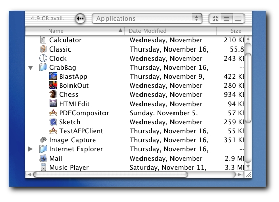
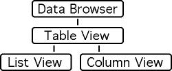
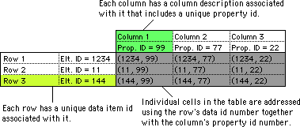
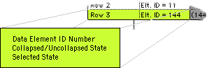
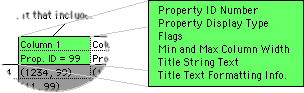
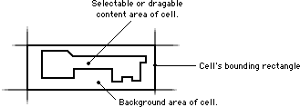
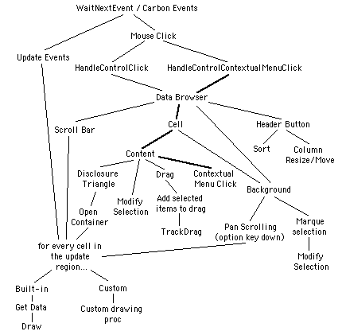
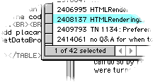

|
|
This Technote presents the Application Programmer's Interface for the DataBrowser control. This new control is available through the Carbon API and was introduced in CarbonLib 1.1. Carbon applications running in Mac OS 8.6 or later with CarbonLib 1.1 can use the DataBrowser control.
The browser control is object oriented in design, and conceptually it serves as a base class that you can use to build your own specialized lists. In its current implementation, the DataBrowser is a small object-oriented hierarchy with two different specializations that are available for use in applications: the column view and the list view. The column view provides the multi-column hierarchical navigation scheme appearing in the file selection lists in Mac OS X. The list view specialization provides a display scheme similar to the one provided by the list manager together with hierarchical display capabilities as found in the Finder's list view. This document discusses the list view specialization of the browser control.
Using DataBrowser will ensure that your lists adhere to the Macintosh Human
Interface Guidelines. It also ensures that users will find your lists
familiar and easy to understand since they appear and behave in a way that
is consistent with the way lists appear and behave in other applications. As
well, the DataBrowser does all of its drawing in accordance with the
appearance manager. As a result, if your application uses the DataBrowser to
display lists, your lists will always be drawn in a way that is consistent
with the current appearance settings, whether on Mac OS 9 or Mac OS X. Most
importantly, this means that your application running in Mac OS X and using
the DataBrowser will have the full benefits of Aqua appearance in the lists
it displays. DataBrowser does the difficult user interface work for you,
letting you focus on the functionality of your application.
This note is directed at application developers who are interested in using the DataBrowser control in their applications.
Updated: [Dec 05 2000]
|
Overview
This section provides a description of what the browser control is and definitions for key concepts used in the rest of this document. The main points described in this section include how the DataBrowser interacts with your application, and how both your application and the DataBrowser use ID numbers to reference items displayed in the browser control.
The DataBrowser is a list management utility that allows your application to provide complex lists that have built-in user interaction functionality. Figure 1 provides an illustration of the DataBrowser control in action.
|

| |
Figure 1. An illustration of the DataBrowser being used to display a list of files.
|
About the DataBrowser....
The DataBrowser is a user interface gadget used to display lists of items inside of windows in your application. The DataBrowser replaces the older List Manager API and surpasses the List Manager API in many ways. Major features found in the DataBrowser that were not supported in the List Manager include:
- No limitation on the number of cells displayed in a list,
- Built-in drag-and-drop handling,
- Built-in display types for text, icons, checkboxes, pop-up menus, progress bars, relevance ranks, and sliders,
- Support for contextual menus and context-sensitive help,
- Built-in text editing for cells displaying text, and
- Built-in hierarchical list support.
The DataBrowser's implementation is object oriented in nature. The List View discussed in this document is only one of the many possible specializations of the DataBrowser's Table View. Figure 2 illustrates the object-oriented hierarchy internal to the DataBrowser. For the purposes of this document, it is useful to be aware of this structure since some of the routines defined for the Table View class can also be used in List View class.
|

| |
Figure 2. An illustration of the object-oriented hierarchy used inside of the browser control.
|
In the interfaces you will find routines that appear to reference different parts of this hierarchy. The routines discussed in this document include both routines for the Table View class and routines for the List View class. Table View is really an abstract class, and when you create a browser control of type List View, the List View object will have its own specialized methods for all of the methods defined for the Table View class.
Back to top
You call the DataBrowser, the DataBrowser calls you....
The DataBrowser provides your application with
sophisticated list display and interaction functionality
that is both easy to use and extensible in many ways. To
allow this level of fidelity and control, the DataBrowser
control uses callbacks to your application at several
points during processing where key choices in the
interaction process are made. At the very least, your
application must provide a routine that allows the data
browser to gain access to the information it displays.
Further discussion of how to provide your own callback
routines for the DataBrowser control are discussed
later in this document starting in the DataBrowser Call-back Routines section.
Back to top
Data & the DataBrowser
The DataBrowser control can be used to display a
single linear list of data items. When you provide a list of
items for display in a DataBrowser control, you do not
provide the actual data that will be displayed. Instead, you
provide a unique 32-bit ID number that your application can
use to refer to the actual data. Whether you store the
actual data in memory, on disk, or across a network is
entirely up to your application. The DataBrowser control
uses these ID numbers when it is drawing the list of items
to ask your application for information about particular
properties of the data items that are being drawn in the
display as that information is required.
|

| |
Figure 3. How Data ID numbers are used together with Property ID numbers to address particular rows in a table.
|
The values your application uses as data item ID numbers
are entirely up to you. The only requirement is that the values are
non-zero. (The value zero is used internally by the Data
Browser in a way similar to the NULL pointer to indicate
that a row has no data item associated with it.) For example,
some possibilities for data item ID numbers you may use are
pointer values, data file offsets, or 32-bit TCP/IP host
addresses. Whenever the DataBrowser needs to display the
data for a particular data item, it will ask your
application for the data associated with the data item ID
number you provided.
Back to top
Rows
Each row in a table displayed by the DataBrowser control
has a unique data item ID number associated with it, together
with some flags describing state information related to the
row. Figure 4 provides a view of the values associated with
each row in a list displayed by the DataBrowser
control.
|

| |
Figure 4. Information maintained by the DataBrowser
for each row displayed in a DataBrowser control.
|
The selection state reflects the selection state of the
item. The collapsed/uncollapsed state is used in
hierarchical lists that feature turn-down arrows that open
sub-lists. These flags are read-only states associated with
rows displayed in the list: an application can query these
values using DataBrowser routines.
|
Definition 1. Data Element ID or Data ID.
Any non-zero, 32-bit value uniquely identifying a data element being displayed in a list. Data ID values map to rows in the tables displayed by the DataBrowser. Data ID values need not be in any particular order, and the values used are entirely up to the application.
The constant kDataBrowserNoItem is a special Data ID value used by the DataBrowser to mean "none of the Data ID numbers currently stored in the browser control." Its usage is analogous to the NULL pointer in C.
|
Concepts relating to specifying the Data ID numbers that
will be used to display a list are discussed in the
Adding Rows section.
Back to top
Columns
For every column that is to be displayed in a table, the
application must provide a number of parameters governing
how the column will be displayed. One of these parameters is a
non-zero, 32-bit value called the column's Property ID
number. Together with the data item ID number, property
numbers are used to refer to individual cells in the table
during callbacks to the application. Figure 3 illustrates
how the DataBrowser uses Property ID numbers together with
Data ID numbers to reference particular cells in the
tables it displays. As with Data ID numbers, the values
an application chooses to use as Property ID numbers are
completely arbitrary.
Definition 2. Property ID.
Any non-zero, 32-bit unsigned integer value that uniquely identifies a column in
a table being displayed by the DataBrowser. Property ID numbers do not need to be ordered or sequential, and the values used are entirely up to the application. Property ID values
0 through 1023 are reserved by Apple for use in the DataBrowser control.
The constant kDataBrowserItemNoProperty is a special Property ID value used by the DataBrowser to mean "none of the Property ID numbers (columns) currently stored in the browser control." Its usage is analogous to the NULL pointer in C.
|
Other information an application provides when a column
is being added to a table includes the column's title,
formatting information for the title, and some other
parameters governing the format of the information displayed.
Figure 5 provides and expanded view of some of the
information associated with a column.
|

| |
Figure 5. Information associated with each column.
|
Later sections will discuss this information in greater
detail; however, at this point, it is worthwhile to take
note of the property display type that is associated with a
column. For convenience, the DataBrowser pre-defines
several display types including strings, pop-up menus,
icons, pictures, and buttons. It is also possible for
applications to implement their own custom display types
through callback routines. We revisit this subject later in
the Defining Columns and Defining Custom Columns sections.
Back to top
Cells
As shown in Figure 3, particular
cells displayed in the tables drawn by the DataBrowser
control are addressed using a combination of the Data ID
assigned to the row and the Property ID assigned to the
column.
Definition 3. Cell.
A Data ID together with a Property ID uniquely identifies a cell in a table
displayed by the DataBrowser. A cell corresponds to a location inside of a Data
Browser list that is at the intersection of a row and a column.
|
Individual cells are used to display facets of the data
items being displayed in a list. The method used to display
the cell's contents is governed by its Property ID.
The concepts presented in this section describe how the
DataBrowser control represents data. It does not
necessarily entail that your application must use this same
data model for the information it is displaying in a Data
Browser control; however, if an application has its own
data model, then the application must provide the mapping
between the structures expected by the DataBrowser and its
own internal representation. As will be shown in later
sections, the DataBrowser control has been designed to
accommodate developers providing a mapping between their own
data model and the data model used by the DataBrowser.
Back to top
Creating DataBrowser Controls
This section discusses about how you can create and initialize a new DataBrowser control inside of your application. Basic structures and operations for adding columns and rows to a browser control are discussed. The structures used to define columns allow your application to provide columns that utilize any of the pre-defined display types such as checkboxes, menus, icons, or text, while at the same time allowing you to design your own presentation mechanisms used when drawing columns. Listing 1 illustrates how an application would add a column to a browser control.
DataBrowser controls can be created using the CreateDataBrowserControl routine. Once a control has been created, applications can proceed to install their own custom callback routines, columns, and rows.
|
The CreateDataBrowserControl routine.
|
OSStatus CreateDataBrowserControl(
WindowRef window,
const Rect *boundsRect,
DataBrowserViewStyle style,
ControlRef *outControl);
|
- window - the window where the control should be placed.
- boundsRect - location where the control should appear in the window.
- style - the view style that should be used when the control is drawn. Currently, the only view styles defined are
kDataBrowserListView and kDataBrowserColumnView. This document's primary focus is the kDataBrowserListView type.
- outControl - if the control has been successfully created, then it will be returned in the location referenced by this parameter.
|
When an application is finished with a DataBrowser control, it can call DisposeControl to release the memory occupied by the control. If an application has allocated any special UPPs for use in the DataBrowser control, then it should de-allocate these after disposing of all of the DataBrowser controls where they were installed.
Back to top
Defining Columns
Columns have both a unique Property ID number associated with them along with information governing the appearance of the information displayed in the column. This information is specified by an application in a DataBrowserListViewColumnDesc structure. It is the application's responsibility to fill in all of the fields in this structure before providing it to a DataBrowser control.
The DataBrowserPropertyDesc sub-record
The DataBrowserPropertyDesc contains
information about the Property ID associated with the column
described in the DataBrowserListViewColumnDesc.
Specific values that can be stored in this structure are
described in the following.
|
The DataBrowserPropertyDesc Structure
|
typedef struct DataBrowserPropertyDesc
DataBrowserTableViewColumnDesc;
struct DataBrowserPropertyDesc {
DataBrowserPropertyID propertyID;
DataBrowserPropertyType propertyType;
DataBrowserPropertyFlags propertyFlags;
};
|
- propertyID. This field contains a 32-bit integer
value that uniquely identifies this column. It is the
Property ID that your application
uses to identify the column. This Property ID number will
also be used by the DataBrowser to identify the column in
callbacks to your application. The DataBrowser interfaces
use the type
DataBrowserPropertyID for Property
ID values.
- propertyType. This field contains a 32-bit
OSType
value that indicates the type of data that is to be
displayed in the column. At the time of this writing,
permissible values for use in this field are as follows:
- propertyFlags. This field contains a 32-bit
integer value of type
DataBrowserPropertyFlags containing
flags controlling the display or interaction provided by
this column. The following constants define mask values that
can be used to set particular flags in this field. All
unused bits in this field are currently reserved for future
use.
kDataBrowserDefaultPropertyFlags - this
constant contains the default property flags that should
be used to initialize the propertyFlags field if no other
flags are required.
kDataBrowserRelativeDateTime - this flag
is only used if the propertyType field is set to the
constant kDataBrowserDateTimeType. When this flag is
specified, date values close to the current date will be
displayed as relative dates.
kDataBrowserPropertyIsEditable - this flag may be set if the values being displayed in the
column can be changed. If an application specifies this
flag, then the application must also provide a callbacks
that allow the DataBrowser to both retrieve and store
data values displayed in this column.
|
|
Note:
The DataBrowser requires the kDataBrowserPropertyIsEditable flag to be set in order to enable editing of any changeable display type (namely checkboxes, pop-up menus, etc). Be sure your application is setting the kDataBrowserPropertyIsEditable flag when defining columns containing checkboxes, menus, and so forth.
|
The DataBrowserListViewHeaderDesc sub-record
DataBrowserListViewHeaderDesc contains a
number of fields describing the appearance of the column's
title. Specific contents of the fields in the structure are
as follows:
|
The DataBrowserListViewHeaderDesc Structure
|
struct DataBrowserListViewHeaderDesc {
UInt32 version; /* Use kDataBrowserListViewLatestHeaderDesc */
UInt16 minimumWidth;
UInt16 maximumWidth;
SInt16 titleOffset;
CFStringRef titleString;
DataBrowserSortOrder initialOrder;
ControlFontStyleRec btnFontStyle;
ControlButtonContentInfo btnContentInfo;
};
|
- version. The version field identifies the format
of the structure. You should always set this field to
the value
kDataBrowserListViewLatestHeaderDesc.
- minimumWidth. For resizable columns, this field
contains the smallest width that the column can be resized
to. If the column is not resizable, then
minimumWidth should
be set to the same value as maximumWidth.
- maximumWidth. For resizable columns, this field
contains the largest width that the column can be resized
to. If the column is not resizable, then
maximumWidth should
be set to the same value as minimumWidth.
- titleOffset. This field contains an offset in
pixels from the left side of the title column where the
title text will be drawn. Both the
titleAlignment and the titleOffset
fields dictate the alignment and offset (inset by default)
of the content of the column when displaying one of the
pre-defined content types.
- titleString. This field contains the text that is
to be drawn as the column's titled.
titleString
may be NULL to indicate that no string is to be
displayed.
- initialOrder. This field contains a value of type
DataBrowserSortOrder. initialOrder is the initial
sort ordering presentation for the column when that column is
the current sort column. Once the DataBrowser is visible, the
user may change this via direct manipulation. Setting this value
to anything other than kDataBrowserOrderDecreasing
will map to kDataBrowserOrderIncreasing. initialOrder
may be assigned one of the following values:
kDataBrowserOrderUndefined - this value
is currently not supported.
kDataBrowserOrderIncreasing - means this
column is to be sorted in ascending order.
kDataBrowserOrderDecreasing - means this
column is to be sorted in descending order.
- btnContentInfo. Contains a structure of type
ControlButtonContentInfo. This structure
describes the contents of the column heading and how it should
be drawn. Only text-only and IconRef (& text) are
supported.
- btnFontStyle. This field contains a structure of
type
ControlFontStyleRec that defines the text
style used for the column heading.
|
Installing Columns
Once an application has initialized the
DataBrowserListViewHeaderDesc structure with
all of the values it requires, then the application can
install the column in a DataBrowser control by calling the
AddDataBrowserListViewColumn routine.
|
The AddDataBrowserListViewColumn routine
|
OSStatus AddDataBrowserListViewColumn(
ControlRef browser,
DataBrowserListViewColumnDesc *columnDesc,
UInt32 position);
|
- browser - a DataBrowser control created by the
CreateDataBrowserControl
routine.
- columnDesc - a record
of type
DataBrowserListViewColumnDesc
with all of its fields initialized to
their appropriate values.
- position - refers to
the position among the columns that are
already installed in the DataBrowser
where this column should be inserted.
To insert this column to the right of
all other columns, provide a very large
value such as
ULONG_MAX.
Returns an operating system result code
describing the success of the operation.
The code noErr will be
returned if the operation was successful.
paramErr will be returned if
the columnDesc record is not
formatted correctly.
|
The routine AddDataBrowserListViewColumn
assumes that the DataBrowserListViewColumnDesc
has been set up by your application to describe the column
being added to the list. The application must set all of the
fields in this record, including the reserved fields (that
must be set to -1) before calling
AddDataBrowserListViewColumn. Listing 1
provides an example showing how you would go about adding a
new column to a DataBrowser control.
|
Listing 1. Adding a new column to a DataBrowser control.
|
DataBrowserListViewColumnDesc columnDesc;
columnDesc.propertyDesc.propertyID = kCheckboxColumn;
columnDesc.propertyDesc.propertyType = kDataBrowserCheckboxType;
columnDesc.propertyDesc.propertyFlags = kDataBrowserDefaultPropertyFlags;
columnDesc.headerBtnDesc.minimumWidth = 30;
columnDesc.headerBtnDesc.maximumWidth = 30;
columnDesc.headerBtnDesc.titleAlignment = teCenter;
columnDesc.headerBtnDesc.titleFontTypeID = kControlFontViewSystemFont;
columnDesc.headerBtnDesc.titleFontStyle = normal;
columnDesc.headerBtnDesc.titleOffset = 0;
columnDesc.titleString = CFStringCreateWithPascalString(
CFAllocatorGetDefault(), "\p", kCFStringEncodingMacRoman);
AddDataBrowserListViewColumn(a_browser, &columnDesc, ULONG_MAX),
|
In this example, the column being added to the browser
control will be a fixed-width column containing checkboxes.
All of the user interactions related to those checkboxes
will be handled automatically be the browser control.
Back to top
Installing Rows
Adding rows to a DataBrowser control is simply a matter
of providing a list of Data ID numbers that you would like
to display in the control. Routines for adding rows are
described in the Providing Data section below.
Back to top
Providing and Ordering Your Data
As discussed earlier, the DataBrowser control itself does not store any
of the data displayed in the list. The data itself is provided by your application's clientDataCallback routine that you provide in the DataBrowserCallbacks structure. Internally, though, the DataBrowser stores 32-bit key values that it passes to your clientDataCallback routine that your application can use to retrieve the data being requested. Listing 6 illustrates how your clientDataCallback should translate these ID numbers to look up and data values as requested by the DataBrowser. This section describes routines your application can use to provide and modify the Data ID values being used by the DataBrowser control for displaying data.
Providing Data
The AddDataBrowserItems and RemoveDataBrowserItems routines can be used to modify the list of Data ID values that are being displayed in the list. In addition, by using AddDataBrowserItems' container parameter, an application can construct a hierarchical list of items that can be displayed with turn-down arrows. For more information about routines available for managing hierarchical lists, see the section Managing Hierarchical Lists section.
|
The AddDataBrowserItems routine.
|
OSStatus AddDataBrowserItems(
ControlRef browser,
DataBrowserItemID container,
UInt32 numItems,
const DataBrowserItemID *items,
DataBrowserPropertyID preSortProperty);
|
- browser - a DataBrowser control created by a call to
CreateDataBrowserControl.
- container - if the items being installed are sub-items of another data element already installed in the browser control, then this parameter should contain the Data ID of that data element. Otherwise, if the items have no parent data element, then you can provide the constant
kDataBrowserNoItem as this argument. The container parameter can be used to construct hierarchical lists for display.
NOTE: adding an item to a container item will have the side
effect of opening that container item.
- numItems - the number of items in the array pointed to by the items parameter.
- items - points to an array of unsigned long integers containing the Data ID numbers of items that are to be added. Note: If
items is set to NULL, then the data browser will automatically generate and add the Data ID numbers 1, 2, ..., numItems to the browser control.
- preSortProperty - If the array of items have been sorted according to the sorting order currently in use in one of the columns in the list being displayed, then you can use this parameter to reference this column. This will allow the DataBrowser to skip the sorting step if the values are already in the correct order.
Returns an operating system result code describing the success of the operation. The code noErr will be returned if the operation was successful.
|
If the new items being added to the browser control will appear in the
visible part of the list, then they will be drawn to the screen. Applications constructing hierarchical lists must proceed in a top-down fashion when installing the Data IDs in the browser control. Once a Data ID has been installed in a browser control, it is possible to associate a list of Data ID numbers with it as sub-items.
|
IMPORTANT:
Adding items to an existing item (as the parent) means that the specified parent item must be classified as a container. This means that when the DataBrowser asks for the kDataBrowserItemIsContainerProperty of the specified parent item, the answer must be true. If your application does not provide this condition, then the AddDataBrowserItems call will fail.
|
Listing 2 illustrates some possible ways you can go about adding a sequence of Data ID numbers to a browser control. Of course, the numbers you decide to use in your application will depend on what is most appropriate for the particular data set you are trying to display.
|
Listing 2.
Adding a sequence of Data IDs (rows) to a browser control.
|
#define kMyItemCount 22
DataBrowserItemID newitems[kMyItemCount];
long i;
/* add a bunch of generated ID
numbers to the control */
for (i = 0; i < kMyItemCount; i++) {
/* Make some arbitrary ID value. The only
requirement is that it be unique. */
newitems[i] = ( i<<12 ) + (4095 ^ i);
}
AddDataBrowserItems(mybrowser, kDataBrowserNoItem,
kMyItemCount, items, kDataBrowserItemNoProperty);
/* instead of indexes or codes, let's use
picture references. Of course, we're assuming we
have a resource file set up with picture resources
128, 129, ... */
for (i = 0; i < kMyItemCount; i++) {
newitems[i] = (DataBrowserItemID) GetResource('PICT', i+128);
if (newitems[i] == NULL) { err = resNotFound; goto bail; }
}
AddDataBrowserItems(some_other_browser, kDataBrowserNoItem,
kMyItemCount, items, kDataBrowserItemNoProperty);
/* let's just use the numbers 1, 2, ..., kMyItemCount. We
only have kMyItemCount items to display, so why not just
number them from 1 to kMyItemCount. In this case, we don't
need to provide an array of ID numbers - the browser will
generate them the ID numbers for us. */
AddDataBrowserItems(yet_another_browser, kDataBrowserNoItem,
kMyItemCount, NULL, kDataBrowserItemNoProperty);
|
The RemoveDataBrowserItems can be used to remove Data IDs from the list of Data ID numbers internally maintained by the DataBrowser. If one of the Data IDs you provide refers to a container item that has a number of sub items, then those sub-items will be removed from the list as well.
|
The RemoveDataBrowserItems routine.
|
OSStatus RemoveDataBrowserItems(
ControlRef browser,
DataBrowserItemID container,
UInt32 numItems,
const DataBrowserItemID *items,
DataBrowserPropertyID preSortProperty);
|
- browser - a DataBrowser control created by a call to
CreateDataBrowserControl.
- container - if the items being removed are sub-items of another data element already installed in the browser control, then this parameter should contain the Data ID of that data element. Otherwise, if the items have no parent data element, then you can provide the constant
kDataBrowserNoItem as this argument.
- numItems - the number of items in the array pointed to by the items parameter.
- items - points to an array of unsigned long integers containing the Data ID numbers of items that are to be removed. If this parameter is set to
NULL, then all of the items will be removed. If this parameter is NULL, then all of the items in the container item referenced by the container parameter will be removed. If items is NULL, then the numItems parameter is ignored.
- preSortProperty - if the array of items has already been sorted, then set this parameter to the Property ID of the column that has the same sorting order.
Returns an operating system result code describing the success of the operation. The code noErr will be returned if the operation was successful.
|
The GetDataBrowserItems, the GetDataBrowserItemCount, and the ForEachDataBrowserItem routines can be used to walk through the Data IDs your application has installed for the DataBrowser control.
|
The GetDataBrowserItems routine.
|
OSStatus GetDataBrowserItems(
ControlRef browser,
DataBrowserItemID container,
Boolean recurse,
DataBrowserItemState state,
Handle items);
|
- browser - a DataBrowser control created by a call to
CreateDataBrowserControl.
- container - to obtain a list of items displayed at the top level of the control's display, provide the constant
kDataBrowserNoItem. Otherwise, to obtain a list of items that are organized as sub-items of a container item, provide the container item's Data ID.
- recurse - When this parameter is true,
GetDataBrowserItems will return a flattened list of all of the data IDs stored in the DataBrowser as sub-items of container parameter. The list will be created using a in-order traversal of the Data ID hierarchy maintained internally by the DataBrowser.
- state - When this field is non-zero, only items with this state will be incorporated into the result.
- items - should contain a new zero-length handle. Upon return, the contents of this handle will be set to contain an array of Data ID numbers for the items that match the criteria provided by other parameters.
Returns an operating system result code describing the success of the operation. The code noErr will be returned if the operation was successful.
|
GetDataBrowserItems is a powerful routine for gathering information about the items being displayed in a DataBrowser during user interaction sequences. For example, to obtain a list of all of the selected items in a list, your application would call the GetDataBrowserItems as shown in Listing 3. The example to GetDataBrowserItems in Listing 3 calculates both the number of items in the selection and it creates a list of the Data ID numbers in the selection. If your application is only interested in determining the number of items in the selection (and not the Data IDs of those items), then you should use the GetDataBrowserItemCount routine as shown in Listing 4.
|
Listing 3. Obtaining a list of all of the selected items in a browser control.
|
Handle selectedItems;
OSStatus err;
UInt32 selectionCount;
selectedItems = NewHandle(0);
if (selectedItems == NULL) { err = memFullErr; goto bail; }
err = GetDataBrowserItems(browser,
kDataBrowserNoItem, /* start searching at the root item */
true, /* recursively search all subitems */
kDataBrowserItemIsSelected, /* only return selected items */
selectedItems);
if (err != noErr) goto bail;
selectionCount = (GetHandleSize(selectedItems) /
sizeof(DataBrowserItemID));
|
This is a one-step call that provides a complete list of all of the items the user has highlighted in the browser control.
|
Note:
When the recurse parameter to the GetDataBrowserItems is set to true, the routine will flatten an entire hierarchy into a single vector of Data ID numbers, but, when it does so, it does not encode any information about that hierarchy into the list of returned Data ID numbers. If your application requires the sort of functionality where it would like to save and restore a hierarchy of Data IDs as they are displayed in a DataBrowser control, then you should build that functionality yourself using combinations of the routines described in this section.
|
|
The GetDataBrowserItemCount routine.
|
OSStatus GetDataBrowserItemCount(
ControlRef browser,
DataBrowserItemID container,
Boolean recurse,
DataBrowserItemState state,
UInt32 *numItems);
|
- browser - a DataBrowser control created by a call to
CreateDataBrowserControl.
- container - to obtain a list of items displayed at the top level of the control's display, provide the constant
kDataBrowserNoItem. Otherwise, to obtain a list of items that are organized as sub-items of a container item, provide the container item's Data ID.
- recurse - When this parameter is true,
GetDataBrowserItemCount will return the number of all of the data IDs stored in the DataBrowser as sub-items of container parameter.
- state - When this field is non-zero, only items with this state will be counted.
- numItems - The total number of items found is returned in the unsigned 32-bit integer referenced by this parameter.
Returns an operating system result code describing the success of the operation. The code noErr will be returned if the operation was successful.
|
The routine GetDataBrowserItemCount is useful for performing quick inquiries about the state of the items being displayed in a browser control. For example, Listing 4 illustrates how you could go about finding out how many items are selected in the browser control. This routine provides a fast efficient mechanism for an application to perform such inquiries.
|
Listing 4. Counting the number of selected rows in a browser control.
|
UInt32 selectionCount;
OSStatus err;
err = GetDataBrowserItemCount(myBrowserControl,
kDataBrowserNoItem, /* start searching at the root item */
true, /* recursively search all subitems */
kDataBrowserItemIsSelected, /* only return selected items */
&selectionCount);
if (err != noErr) goto bail;
if (selectionCount > 0) { ...
|
For enumerating the Data ID numbers stored in a DataBrowser control or performing some operation for each of those items, your application can use the ForEachDataBrowserItem routine. One of the parameters to this routine is a callback procedure that will be called for each of the Data ID numbers referenced by the other parameters to this routine.
|
The ForEachDataBrowserItem routine.
|
typedef void (*DataBrowserItemProcPtr)(
DataBrowserItemID item,
DataBrowserItemState state,
SInt32 clientData);
typedef DataBrowserItemProcPtr DataBrowserItemUPP;
OSStatus ForEachDataBrowserItem(
ControlRef browser,
DataBrowserItemID container,
Boolean recurse,
DataBrowserItemState state,
DataBrowserItemUPP callback,
SInt32 clientData);
|
- browser - a DataBrowser control created by a call to
CreateDataBrowserControl.
- container - to have your callback called for all of the items displayed at the top level of the control's display, provide the constant
kDataBrowserNoItem. Otherwise, to have your callback called for all of the items that are organized as sub-items of a container item, provide the container item's Data ID.
- recurse - When this parameter is true,
ForEachDataBrowserItem will call the callback routine for all of the data IDs stored in the DataBrowser as sub-items of container parameter.
- state - When this field is non-zero, only items with this state will be counted.
- callback - a UPP referencing your callback routine. The
DataBrowserItemProcPtr declaration above shows how this routine should be defined in your application. This routine will be called for every Data ID currently stored in the browser control matching the criteria you provide in the other ForEachDataBrowserItem parameters.
- clientData - this is a reference value passed through to your callback routine. Its contents are defined by the application.
Returns an operating system result code describing the success of the operation. The code noErr will be returned if the operation was successful.
|
The ForEachDataBrowserItem routine is especially useful for situations where you would like to enumerate and perform some operation on some set of Data ID numbers. Listing 5 illustrates how your application could use the ForEachDataBrowserItem to perform some additional filtering when selecting Data ID numbers. ForEachDataBrowserItem is a powerful routine that allows your application to perform complex inquiries about the Data IDs stored in a data browser control; however, before calling this routine for all of the inquiry operations required by your application you should consider whether it would be more appropriate to call either GetDataBrowserItems or GetDataBrowserItemCount.
|
Listing 5. Enumerating and acting on certain items in the selection.
|
static Handle gCollector = NULL;
OSStatus gCoStatus = noErr;
/* in our item callback routine, we add any of the items
that satisfy some interesting criteria to the list of
data ID numbers we are accumulating in the handle
referenced by the global variable gCollector. */
static void MyDataBrowserItemProc( DataBrowserItemID item,
DataBrowserItemState state, SInt32 clientData) {
if (gCoStatus == noErr && clientData == 'Yeah') {
if ( SatisfiesSomeInterestingCriteria(item) ) {
gCoStatus = PtrAndHand(&item, gCollector, sizeof(item));
}
}
}
....
OSStatus err;
DataBrowserItemUPP myItemProc;
UInt32 selectionCount;
gCoStatus = noErr;
gCollector = NewHandle(0);
if (gCollector == NULL) { err = memFullErr; goto bail; }
/* set up our callback's routine descriptor */
myItemProc = NewDataBrowserItemUPP(MyDataBrowserItemProc);
if (myItemProc == NULL) { err = memFullErr; goto bail; }
/* call our callback routine for every item that
is currently a member of the selection. */
err = ForEachDataBrowserItem(any_old_browser,
kDataBrowserNoItem, /* start searching at the root item */
true, /* recursively search all subitems */
kDataBrowserItemIsSelected, /* call it for selected items */
myItemProc, /* a reference to our callback */
'Yeah'); /* our arbitrary and private parameter */
if (err != noErr) goto bail;
if ((err = gCoStatus) != noErr) goto bail;
selectionCount = (GetHandleSize(selectedItems) /
sizeof(DataBrowserItemID));
|
To discover the state of a particular item, your application can
call the GetDataBrowserItemState routine. Using this routine your
application can find out if a cell is selected or if a container cell
has been opened (i.e., the turn-down arrow is in the down position).
|
The GetDataBrowserItemState routine.
|
OSStatus GetDataBrowserItemState(
ControlRef browser,
DataBrowserItemID item,
DataBrowserItemState *state);
|
- browser - a DataBrowser control created by a call to
CreateDataBrowserControl.
- item - the Data ID of the row you are interested in. NOTE: As discussed later in the Selection Handling section, the DataBrowser provides facilities for selecting and highlighting entire rows of data, but it does not provide any facilities for selecting individual cells within rows.
- state - various combinations of the following flags:
kDataBrowserItemNoState - has no state associated with it at this time.
kDataBrowserItemIsSelected - is a member of the current selection.
kDataBrowserContainerIsOpen - disclosure open.
kDataBrowserItemIsDragTarget - Only true during a drag operation.
Returns an operating system result code describing the success of the operation. The code noErr will be returned if the operation was successful.
|
Back to top
Ordering Data
There are two sides to ordering the data displayed by the DataBrowser control. First, your application must provide a way for the DataBrowser
to compare items referenced by Data ID numbers based with a common Property ID
number. That is to say, your application must provide a method for comparing rows based on values displayed in particular columns. Your application can do this by providing a comparison callback routine in the compareCallback field of the DataBrowserCallbacks structure. For more information providing a comparison routine, please refer to that section.
The other side of ordering the data displayed by the DataBrowser is telling the browser control which column should be used for sorting and in what order items should be presented (ascending or descending). For the most part, your application should leave these settings up to the user. However, in situations where you would like to sort the values displayed in the DataBrowser control explicitly, the following routines have been provided.
|
Note:
The sorting routine used by the DataBrowser is non destructive
and it preserves the
ordering of elements that are equal across sorts. This means
that if the list displayed is sorted based on column 1, and then
you sort
using column 2 and all of the Data IDs in column 2 map to the same
value, then the order of the list will not change.
|
SetDataBrowserSortOrder can be used to explicitly set the sorting order for the list. If the list has not been sorted or the sorting order requested is not in effect, then the list with be sorted and re-drawn using the new sorting order. To find out what sorting order is currently in effect, your application can call the GetDataBrowserSortOrder routine.
|
The SetDataBrowserSortOrder routine.
|
OSStatus SetDataBrowserSortOrder(
ControlRef browser,
DataBrowserSortOrder order);
|
- browser - a DataBrowser control created by a call to
CreateDataBrowserControl.
- order - this parameter should be set to one of the three following constant values:
kDataBrowserOrderUndefined - not supported.
kDataBrowserOrderIncreasing - ascending order.
kDataBrowserOrderDecreasing - descending order.
Returns an operating system result code describing the success of the operation. The code noErr will be returned if the operation was successful.
|
|
The GetDataBrowserSortOrder routine.
|
OSStatus GetDataBrowserSortOrder(
ControlRef browser,
DataBrowserSortOrder *order);
| |
Returns an operating system result code describing the success of the operation. The code noErr will be returned if the operation was successful.
|
To designate a column that is used for the sorting operation, your application call SetDataBrowserSortProperty with the column's associated Property ID number. If the list is not currently sorted or if the list is currently sorted with a different column, then the list will be resorted and re-drawn. The GetDataBrowserSortProperty can be used to discover the Property ID number of the column currently being used for sorting the list.
|
The SetDataBrowserSortProperty routine.
|
OSStatus SetDataBrowserSortProperty(
ControlRef browser,
DataBrowserPropertyID property);
| |
Returns an operating system result code describing the success of the operation. The code noErr will be returned if the operation was successful.
|
|
The GetDataBrowserSortProperty routine.
|
OSStatus GetDataBrowserSortProperty(
ControlRef browser,
DataBrowserPropertyID *property);
|
- browser - a DataBrowser control created by a call to
CreateDataBrowserControl.
- property - the Property ID of the column being used to sort the list will be stored in the variable pointed to by this parameter.
Returns an operating system result code describing the success of the operation. The code noErr will be returned if the operation was successful.
|
The routine SortDataBrowserContainer can be used to sort hierarchical lists of items. For information about setting up a hierarchical list, refer to the
Managing Hierarchical Lists section.
|
The SortDataBrowserContainer routine.
|
OSStatus SortDataBrowserContainer(
ControlRef browser,
DataBrowserItemID container,
Boolean sortChildren);
|
- browser - a DataBrowser control created by a call to
CreateDataBrowserControl.
- container - to sort all of the items displayed at the top level of the control's display, provide the constant
kDataBrowserNoItem. Otherwise, sort all of the items that are organized as sub-items of a container item, provide the container item's Data ID.
- sortChildren - if this parameter is true, then all of the sub-items and sub-containers organized within the container will be sorted.
Returns an operating system result code describing the success of the operation. The code noErr will be returned if the operation was successful.
|
Back to top
DataBrowser Callback Routines
As discussed in the preliminary section discussing callbacks, "You call the DataBrowser, the DataBrowser calls you....", the DataBrowser control calls back to your application at key points during its execution either to request information from your application or to notify your application of changing conditions. As the DataBrowser control was designed to support many varied and complex scenarios of deployment, there are a large number of callback routines that your application can provide. Keep in mind, though, it is not necessary for an application to provide its own definition for each callback - only the ones actually required by an application need to be defined.
The DataBrowserCallbacks Structure
The DataBrowserCallbacks structure is the structure your application must use to provide references to the routines it would like the DataBrowser control to use when asking your application for information or notifying your application about changing conditions. At the very least, your application must define its own clientDataCallback routine, but keep in mind, the functionality of the list will improve as you add more routines.
clientDataCallback. The client data callback is used for communicating data between the DataBrowser and your application. When the DataBrowser needs to display a value for a particular cell, it will call your clientDataCallback to request the data. If the user changes the value for a particular cell, the DataBrowser will call your clientDataCallback with a new copy of the data that you should use to replace your application's internal copy.
|
DataBrowserGetSetItemDataUPP - the Client Data Callback.
|
typedef OSStatus (*DataBrowserGetSetItemDataProcPtr)(
ControlRef browser,
DataBrowserItemID item,
DataBrowserPropertyID property,
DataBrowserItemDataRef itemData,
Boolean setValue);
typedef DataBrowserGetSetItemDataProcPtr
DataBrowserGetSetItemDataUPP;
|
- browser - a DataBrowser control created by a call to
CreateDataBrowserControl.
- item - the Data ID of the data row whose data is being requested in this call.
- property - the Property ID to be used in conjunction with the Data ID to locate the cell whose data is being requested in this call. This value uniquely identifies the column.
- itemData - a pointer to the data or to a data buffer prepared to receive the data.
- setValue - if
setValue is true, then your callback should replace its current copy of the value associated with (item, property) with the value pointed to by itemData. If setValue to false, then your application should store a copy of the value associated with (item, property) to the buffer pointed to by itemData.
Returns an operating system result code describing the success of the operation. Your callback should return the result code noErr if the operation was successful.
|
The data callback routine is the place where your application provides a mapping between Data ID numbers used to identify rows in the list, Property ID numbers used to identify columns, and the actual data that should be displayed in any particular cell. The DataBrowser will call your data callback routine with a Data ID and a Property ID. Your data callback routine should respond by either saving or returning the appropriate value depending on the state of the setValue parameter. Listing 6 a simple example of how your application could implement a data callback routine.
|
Listing 6.
Example data callback routine.
|
/* MySimpleDataCallback is a simple data callback routine
that would be used in a browser control displaying a list
of generic document icons together with a list of checkboxes.
The checkbox column is a mutable column. */
OSStatus MySimpleDataCallback(
ControlRef browser,
DataBrowserItemID itemID,
DataBrowserPropertyID property,
DataBrowserItemDataRef itemData,
Boolean changeValue) {
IconRef myIcon;
OSStatus err;
/* start with a known state */
myIcon = NULL;
/* look at the property ID and decide what to do
depending on what column we're dealing with... */
if (property == kMyCheckboxColumn) {
ThemeButtonValue buttonValue;
/* are we being asked to change the value
we have in our own store or are we being
asked to retried the value? You'll only
have ask this question for mutable columns. */
if (changeValue) {
err = GetDataBrowserItemDataButtonValue(itemData,
&buttonValue);
if (err != noErr) goto bail;
/* NOTE: our internal storage lookup mechanism must
map itemID numbers to the values stored for each
button in the list. */
err = StoreTheValueSomewhere(itemID, buttonValue);
if (err != noErr) goto bail;
} else {
err = GetTheButtonValueFromSomewhere(itemID, &buttonValue);
if (err != noErr) goto bail;
err = SetDataBrowserItemDataButtonValue(itemData,
buttonValue);
if (err != noErr) goto bail;
}
} else if (property == kMyIconOnlyColumn) {
/* if the column is not mutable, then we
can safely assume we are only being asked
to retrieve the value. */
err = GetIconRef(kOnSystemDisk, kSystemIconsCreator,
kGenericDocumentIcon, &myIcon);
if (err != noErr) goto bail;
err = SetDataBrowserItemDataIcon(itemData, myIcon);
if (err != noErr) goto bail;
ReleaseIconRef(myIcon);
myIcon = NULL;
} else {
err = errDataBrowserPropertyNotSupported
goto bail;
}
return noErr;
bail:
if (myIcon != NULL) ReleaseIconRef(myIcon);
return err;
}
|
compareCallback. This routine will be called by the DataBrowser when it is ordering the values displayed in a column. Your application should provide a comparison for all of the every property type your application presents that is capable of being sorted.
typedef Boolean (*DataBrowserCompareProcPtr)(
ControlRef browser,
DataBrowserItemID itemOne,
DataBrowserItemID itemTwo,
DataBrowserPropertyID sortProperty);
typedef DataBrowserCompareProcPtr DataBrowserCompareUPP;
|
- browser - a DataBrowser control created by a call to
CreateDataBrowserControl.
- itemOne - the Data ID of the first row to be used in the comparison.
- itemTwo - the Data ID of the second row to be used in the comparison.
- sortProperty - the Property ID number for the column being sorted.
Your application's callback should return true if the value of the data referenced by itemOne is less than the value of the data referenced by itemTwo, and it should return should return false if the value of the data referenced by itemOne is greater than or equal to the value of the data referenced by itemTwo. The comparison should only consider the values being displayed in the column referenced by the Property ID in sortProperty. Sorting is stable, so you can use secondary and tertiary sorting. Each time a user clicks a column, the column will be sorted, but the sort order of matching items will be preserved.
|
itemNotificationCallback. The item notification callback routine will be called by the DataBrowser to notify your application of interesting conditions that it may wish to respond to. The kinds of conditions that your application will be notified of are enumerated and defined in Table 1.
typedef void (*DataBrowserItemNotificationProcPtr)(
ControlRef browser,
DataBrowserItemID item,
DataBrowserItemNotification message);
typedef DataBrowserItemNotificationProcPtr
DataBrowserItemNotificationUPP;
|
- browser - a DataBrowser control created by a call to
CreateDataBrowserControl.
- item - the Data ID of the row being identified by this call.
- message Possible values for this parameter are described in Table 1.
|
|
Table 1. Notifications provided by the browser control.
|
|
Constant Name | Description |
|
kDataBrowserItemAdded
| The specified item has been added to the browser. |
kDataBrowserItemRemoved
| The specified item has been removed from the browser. |
kDataBrowserEditStarted
| Starting an EditText session for specified item. |
kDataBrowserEditStopped
| Stopping an EditText session for specified item. |
kDataBrowserItemSelected
| Item has just been added to the selection set. |
kDataBrowserItemDeselected
| Item has just been removed from the selection set. |
kDataBrowserItemDoubleClicked
| The user double clicked on an item. |
kDataBrowserContainerOpened
| Container has been opened. |
kDataBrowserContainerClosing
| Container is about to close. |
kDataBrowserContainerClosed
| Container has been closed. |
kDataBrowserContainerSorting
| Container is about to be sorted (lock any volatile
properties). |
kDataBrowserContainerSorted
| Container has been sorted (you may release any
property locks). |
kDataBrowserTargetChanged
| The target has changed to the specified item. |
kDataBrowserUserStateChanged
| The user has reformatted the view for the target. |
kDataBrowserSelectionSetChanged
| The selection set has been modified (net result
may be the same). |
addDragItemCallback. Once the DataBrowser has determined it is beginning an outgoing drag, it iterates through all of the selected items calling the DataBrowserAddDragItemProcPtr. At this point, your application can add the items drag inside of the addDragItemCallback routine. Your application's addDragItemCallback routine will be called after the DragReference has been created, but before TrackDrag is called. DataBrowser takes care of the imaging and adds transparency for you, so there is no need to create or add your own transparency information to the drag reference.
In this routine your application should add the item to the drag. Return true from this routine to tell the DataBrowser to add a transparent representation of the row to the drag image.
typedef Boolean (*DataBrowserAddDragItemProcPtr)(
ControlRef browser,
DragReference theDrag,
DataBrowserItemID item,
ItemReference *itemRef);
typedef DataBrowserAddDragItemProcPtr DataBrowserAddDragItemUPP;
|
- browser - a DataBrowser control created by a call to
CreateDataBrowserControl.
- theDrag - the drag reference being constructed by the DataBrowser.
- item - this is the item ID of the item your application should add to the drag.
- itemRef - this parameter is currently unused. You should set this parameter to point to an
ItemReference variable before calling this routine.
If your callback returns true, then the item will be added to the transparent drag image. If it returns false, it will not.
|
acceptDragCallback. As an incoming drag is moved over an item, this routine is called. If your routine returns true, then the DataBrowser will draw the right highlighting and be prepared to receive a DataBrowserReceiveDragProcPtr call.
typedef Boolean (*DataBrowserAcceptDragProcPtr)(
ControlRef browser,
DragReference theDrag,
DataBrowserItemID item);
typedef DataBrowserAcceptDragProcPtr DataBrowserAcceptDragUPP;
|
- browser - a DataBrowser control created by a call to
CreateDataBrowserControl.
- theDrag - a Drag Manager reference.
- item - This is the item ID of the item the drag is being held over. If the drag is being held over the list but not over any item, then item will contain the default target item ID for the list. The default target item ID for the list is discussed in the section Setting the Root Container.
Your callback should return true if it is capable of accepting the drag in the location designated by the item parameter.
|
receiveDragCallback. Your receiveDragCallback routine will be called to receive drags. In this routine, your application should extract the items it needs from the drag and add them to the list in the location defined by the item parameter.
Boolean (*DataBrowserReceiveDragProcPtr) (
ControlRef browser,
DragReference theDrag,
DataBrowserItemID item);
typedef DataBrowserReceiveDragProcPtr
DataBrowserReceiveDragUPP;
|
- browser - a DataBrowser control created by a call to
CreateDataBrowserControl.
- theDrag - a Drag Manager reference.
- item - This is the item ID of the item the drag is being held over. If the drag is being held over the list but not over any item, then item will contain the default target item ID for the list. The default target item ID for the list is discussed in the section Setting the Root Container.
Your callback should return true if is successfully completes processing all of the information in the drag. Otherwise, it should return false. If your callback returns false, the zoom-back animation will occur for the drag.
|
postProcessDragCallback. Your application's postProcessDragCallback routine will be called after a drag command has been completed if any one of the drag processing callback routines you installed (receiveDragCallback, acceptDragCallback, or addDragItemCallback) were called during the drag. Specifically, this routine will be called if any one call to addDragItemCallback returns true, and after all calls acceptDragCallback and receiveDragCallback. Inside of your postProcessDragCallback routine, your application should deallocate any resources that were allocated when the other drag handlers were called. The postProcessDragCallback will be called immediately before the drag reference is deallocated by the DataBrowser so your application should not assume that this structure will remain intact after this callback is made.
typedef void (*DataBrowserPostProcessDragProcPtr)(
ControlRef browser,
DragReference theDrag,
OSStatus trackDragResult);
typedef DataBrowserPostProcessDragProcPtr
DataBrowserPostProcessDragUPP;
|
- browser - a DataBrowser control created by a call to
CreateDataBrowserControl.
- theDrag - a Drag Manager drag reference.
- trackDragResult - the result returned by
TrackDrag
Returns an operating system result code describing the success of the operation. Your callback should return the result code noErr if the operation was successful.
|
getHelpContentCallback - for Displaying Help Content.
typedef void (*DataBrowserGetHelpContentProcPtr)(
ControlRef browser,
DataBrowserItemID item,
DataBrowserPropertyID property,
HMContentRequest inRequest,
HMContentProvidedType *outContentProvided,
HMHelpContentPtr ioHelpContent);
typedef DataBrowserGetHelpContentProcPtr
DataBrowserGetHelpContentUPP;
|
- browser - a Data
Browser control created by a call to
CreateDataBrowserControl.
- item - the Data ID indentifying the row.
- property - the Property ID identifying the column.
- inRequest - either
kHMSupplyContent or kHMDisposeContent.
- outContentProvided - should be set to the content type provided in the record pointed to by
ioHelpContent.
- ioHelpContent - a help content record containing the help information to be displayed.
Returns an operating system result code describing the success of the operation.
Your callback should return the result code noErr if the operation
was successful.
|
contextualMenuCallback.
typedef void (*DataBrowserGetContextualMenuProcPtr)(
ControlRef browser,
MenuRef *menu,
UInt32 *helpType,
CFStringRef *helpItemString,
AEDesc *selection);
typedef DataBrowserGetContextualMenuProcPtr
DataBrowserGetContextualMenuUPP;
|
- browser - a DataBrowser control created by a call to
CreateDataBrowserControl.
- menu - Your callback should provide a MenuRef in this parameter.
- helpType - set this variable to one of the values
kCMHelpItemNoHelp, kCMHelpItemAppleGuide, or kCMHelpItemOtherHelp. This value will be passed to ContextualMenuSelect.
- helpItemString - The very first item that appears in the contextual menu. If you set this value to
Null, then the default "Help" string will be displayed.
- selection - this will point to an empty
AEDesc and your callback should set this to your own internal representation of the selection. This will be passed to ContextualMenuSelect.
Returns an operating system result code describing the success of the operation. Your callback should return the result code noErr if the operation was successful.
|
selectContextMenuCallback.
typedef void (*DataBrowserSelectContextualMenuProcPtr)(
ControlRef browser,
MenuRef menu,
UInt32 selectionType,
SInt16 menuID,
MenuItemIndex menuItem);
typedef DataBrowserSelectContextualMenuProcPtr
DataBrowserSelectContextualMenuUPP;
|
- browser - a DataBrowser control created by a call to
CreateDataBrowserControl.
- menu - the menu reference your application provided in its
contextualMenuCallback.
- selectionType - returned from
ContextualMenuSelect.
- menuID - the menu ID of the menu selected. This field will be
zero if no selection was made.
- menuItem - the menu item number of the item selected.
|
This section discusses operations on the
DataBrowserCallbacks structure as a whole;
discussion of the meaning of its constituent elements is
provided later in this document. For your convenience, the
field names listed above are linked to those descriptions.
In the simplest of cases, the
clientDataCallback is the only callback your
application will need to re-define.
Pointers to the callback routines used by a particular
DataBrowser control can be accessed through the
DataBrowserCallbacks structure. The mechanism
used for installing the callback routines for a Data
Browser control is analogous to the mechanism used for
QuickDraw's SetStdProcs
routine: an application calls
InitDataBrowserCallbacks to set up a
DataBrowserCallbacks structure so it contains
all of the standard DataBrowser callback routines, then
your application replaces the callbacks it wishes to
customize with pointers to its own routines.
|
The InitDataBrowserCallbacks routine.
|
OSStatus InitDataBrowserCallbacks(
DataBrowserCallbacks* callbacks);
| |
Returns an operating system result code describing the success of the operation.
The code noErr will be returned if the operation was
successful.
|
The routine InitDataBrowserCallbacks
initializes a DataBrowserCallbacks structure so
it contains references to all of the default callback
routines used by the DataBrowser control. After calling
InitDataBrowserCallbacks, your application
should replace the callback routines it wishes to customize
with references to its own routines.
Once your application has installed references to its own
callback routines in the DataBrowserCallbacks
structure, it can install the new callbacks in a Data
Browser control by calling the
SetDataBrowserCallbacks routine. This routine
replaces the DataBrowserCallbacks structure
currently being used by the control with the structure the
application provides as a parameter.
|
The SetDataBrowserCallbacks routine.
|
OSStatus SetDataBrowserCallbacks(
ControlRef control,
const DataBrowserCallbacks *callbacks);
| |
Returns an operating system result code describing the success of the operation.
The code noErr will be returned if the operation was
successful.
|
It is also possible to retrieve a copy of the
DataBrowserCallbacks structure that is
currently being used by a DataBrowser control. This can be
done using the GetDataBrowserCallbacks
routine.
|
The GetDataBrowserCallbacks routine.
|
OSStatus GetDataBrowserCallbacks(
ControlRef control,
DataBrowserCallbacks *callbacks);
| |
Returns an operating system result code describing the success of the operation.
The code noErr will be returned if the operation was
successful.
|
When used in combination with the
SetDataBrowserCallbacks routine,
GetDataBrowserCallbacks provides a mechanism
in which an application can either temporarily override or
replace one or more callbacks being used by a DataBrowser
control at particular points during processing.
Back to top
Pre-defined Column Display Types
For convenience, the DataBrowser control provides a
number of pre-defined display types that your application
can use to display different types of data. These are
provided to reduce the coding overhead involved for
displaying a number common data types. Furthermore, facilities
have been provided for developers who wish to provide their
own display code for drawing their data types in special
ways.
Listing 1 illustrates how you
would go about creating a column of checkboxes for display
in the DataBrowser. This was done by providing the
kDataBrowserCheckboxType as the property type
in the DataBrowserListViewColumnDesc record
passed to the AddDataBrowserListViewColumn
routine. Columns that use any of the other pre-defined
display types can be created in the same way.
|
Note:
The DataBrowser requires the kDataBrowserPropertyIsEditable flag to be set in order to enable editing of any changeable display type (namely checkboxes, pop-up menus, etc). Be sure your application is setting the kDataBrowserPropertyIsEditable flag when defining columns containing checkboxes, menus, and so forth.
|
The remaining parts of this section detail the various
pre-defined display types provided by the DataBrowser. For
information about how to provide routines for doing your own
drawing, refer to the Custom Column
Display Types section that follows.
Back to top
Icons
To display a list of icons in a DataBrowser column, your
application must define a property with the type
kDataBrowserIconType. Columns with the property
type kDataBrowserIconType are used to display
lists of icons. For columns of this type, the DataBrowser
control expects that your Data
Callback Routine will provide an IconRef
referring to the icon that is to be drawn in a cell. It is
also possible for your data callback routine to provide
other information used in drawing the icon such as a tint
color and an icon transform type. Routines you can use for
providing this information are described in detail below.
|
The SetDataBrowserItemDataIcon routine
|
OSStatus SetDataBrowserItemDataIcon (
DataBrowserItemDataRef itemData,
IconRef theData );
|
- itemData - the
itemData reference number that was
passed to your Data
Callback Routine.
- theData - the icon
reference for the icon that is to be
displayed.
Returns an operating system result code
describing the success of the operation.
The code noErr will be
returned if the operation was
successful.
|
SetDataBrowserItemDataIcon should be called
from inside of your Data
Callback Routine to specify what icon is to be drawn in
a particular cell. This routine should only be called for
columns that have been defined with either the
kDataBrowserIconType property type or the
kDataBrowserIconAndTextType property type. For
more information about IconRefs refer to the
Icon
Services documentation.
|
The SetDataBrowserItemDataIconTransform routine
|
OSStatus SetDataBrowserItemDataIconTransform (
DataBrowserItemDataRef itemData,
IconTransformType theData );
|
- itemData - the
itemData reference number that was
passed to your Data
Callback Routine.
- theData - the icon
reference for the icon that is to be
displayed.
Returns an operating system result code
describing the success of the operation.
The code noErr will be
returned if the operation was
successful.
|
SetDataBrowserItemDataIconTransform allows
your application to specify that a special visual
transformation is to be applied to the icon when it is
drawn. These transformations correspond to the various
display states the Finder uses when drawing icons.
|
The SetDataBrowserItemDataRGBColor routine
|
OSStatus SetDataBrowserItemDataRGBColor (
DataBrowserItemDataRef itemData,
RGBColor *theData );
|
- itemData - the
itemData reference number that was
passed to your Data
Callback Routine.
- theData - an RGB color
record.
Returns an operating system result code
describing the success of the operation.
The code noErr will be
returned if the operation was
successful.
|
SetDataBrowserItemDataRGBColor allows your
application to provide a color that will be used to tint the
icon when it is drawn. The effect provided by this facility
is similar to the effect provided by the icon label
transformation constants, except this method allows your
application to specify a specific color.
Back to top
Text
For displaying a list of textual strings, the DataBrowser defines the display type
kDataBrowserTextType. When used, this type
tells the DataBrowser that the column is to be drawn as a
list of Unicode-encoded strings. Core Foundation
CFStringRefs are used to represent the text
data drawn in the column. Inside of your application's data
callback routine, call the
SetDataBrowserItemDataText routine to provide
the text data that the DataBrowser is to display in the
list.
|
The SetDataBrowserItemDataText routine
|
OSStatus SetDataBrowserItemDataText (
DataBrowserItemDataRef itemData,
CFStringRef theData );
|
- itemData - the
itemData reference number that was
passed to your Data
Callback Routine.
- theData - a Core
Foundation string reference.
Returns an operating system result code
describing the success of the operation.
The code noErr will be
returned if the operation was
successful.
|
SetDataBrowserItemDataText must be called
from inside of an application's data callback routine when
the cell being drawing is inside of a column with either the
kDataBrowserTextType property type or the
kDataBrowserIconAndTextType property type. If
the kDataBrowserPropertyIsEditable flag is set
among the DataBrowserPropertyFlags for the
column's property, then the text displayed in the column
will be editable and can be changed by the user. In these
cases, your application can retrieve the modified text using
the GetDataBrowserItemDataText routine. The data
browser will make its own internal copy of the CFStringRef
when this routine is called.
|
The GetDataBrowserItemDataText routine
|
OSStatus GetDataBrowserItemDataText (
DataBrowserItemDataRef itemData,
CFStringRef *theData );
|
- itemData - the
itemData reference number that was
passed to your Data
Callback Routine.
- theData - a pointer to
a location where a Core Foundation
string reference will be returned.
On completion, this parameter will contain a newly created
CFStringRef. Your application must release this string reference once it is no longer needed.
Returns an operating system result code
describing the success of the operation.
The code noErr will be
returned if the operation was
successful.
|
If your data callback routine is called with the
setValue parameter set to true, then that means
that the text being displayed in the cell referred to in the
call has been modified. At that point, your application
should call GetDataBrowserItemDataText to
retrieve the new text. Your application must release
the CFStringRef once it is no longer needed.
Back to top
Icons with Text
To display a list of icons associated with text, your
application must create a column with the property type
kDataBrowserIconAndTextType. After that, your
application can use both the routines defined for icon
columns and the routines defined for text columns to define
the contents for each cell.
Back to top
Time
To display a list of date values, use the property type
kDataBrowserDateTimeType. Columns defined with
this property type are capable of date values returned by
the date and time utilities routines. If the
kDataBrowserRelativeDateTime flag is specified
among the DataBrowserPropertyFlags for the
column's property, then the time will be displayed as a
relative time value for times proximate to the current clock
setting rather than an absolute time value.
|
The SetDataBrowserItemDataDateTime routine
|
OSStatus SetDataBrowserItemDataDateTime (
DataBrowserItemDataRef itemData,
long theData );
|
- itemData - the
itemData reference number that was
passed to your Data
Callback Routine.
- theData - a 32-bit
value representing the number of
elapsed seconds elapsed since midnight
January
1, 1904.
Returns an operating system result code
describing the success of the operation.
The code noErr will be
returned if the operation was
successful.
|
SetDataBrowserItemDataDateTime can be used
to provide a 32-bit time value for display. The value
displayed should be encoded as the number of seconds elapsed since
midnight January 1, 1904. For more information about date
and time encodings used in the Mac OS, refer to the
Date
and Time Measurement Utilities documentation.
|
The SetDataBrowserItemDataLongDateTime routine
|
OSStatus SetDataBrowserItemDataLongDateTime (
DataBrowserItemDataRef itemData,
const LongDateTime *theData );
|
- itemData - the
itemData reference number that was
passed to your Data
Callback Routine.
- theData - a pointer to
a 64-bit integer representing the
number of seconds that have elapsed
since midnight January 1, 1904.
Returns an operating system result code
describing the success of the operation.
The code noErr will be
returned if the operation was
successful.
|
SetDataBrowserItemDataLongDateTime can be
used to provide a 64-bit time value for display. The value
displayed should be encoded as the number of seconds elapsed since
midnight January 1, 1904. For more information about date
and time encodings used in the Mac OS, refer to the
Date
and Time Measurement Utilities documentation.
If the kDataBrowserRelativeDateTime flag has been set among the column's property flags, then the time will be displayed as a relative time value for times proximate to the current clock setting.
checkboxes
Columns created with the property type
kDataBrowserCheckboxType will contain a list of
checkboxes. Normally, to allow editing, your application
should set the kDataBrowserPropertyIsEditable
flag among the DataBrowserPropertyFlags. Checkboxes displayed by the DataBrowser are capable of
displaying three values defined for the
ThemeButtonValue data type:
kThemeButtonOff, kThemeButtonOn,
or kThemeButtonMixed. The value displayed for
the control is determined by the
SetDataBrowserItemDataButtonValue routine.
|
The SetDataBrowserItemDataButtonValue routine
|
OSStatus SetDataBrowserItemDataButtonValue (
DataBrowserItemDataRef itemData,
ThemeButtonValue theData );
|
- itemData - the
itemData reference number that was
passed to your Data
Callback Routine.
- theData - a value
representing the setting to display for
the control.
Returns an operating system result code
describing the success of the operation.
The code noErr will be
returned if the operation was
successful.
|
If the user has changed the value displayed by the
control, then your callback routine will be called with the
setValue parameter set to true. At that point,
your application can call the
GetDataBrowserItemDataButtonValue routine to
find out the new checkbox setting.
|
The GetDataBrowserItemDataButtonValue routine
|
OSStatus GetDataBrowserItemDataButtonValue (
DataBrowserItemDataRef itemData,
ThemeButtonValue *theData );
|
- itemData - the
itemData reference number that was
passed to your Data
Callback Routine.
- theData - a value
representing the setting to display for
the control.
Returns an operating system result code
describing the success of the operation.
The code noErr will be
returned if the operation was
successful.
|
Back to top
Progress Indicators
To display a progress indicators in a column, your
application must create a column with the property type
kDataBrowserProgressBarType. Progress
indicators are displayed using the standard appearance
mercury/groove visual analogy. Three values are used by the
DataBrowser to determine the appearance of the progress
indicators: the minimum, maximum, and current value.
Routines described in this section allow you to modify these
values.
|
The SetDataBrowserItemDataValue routine
|
OSStatus SetDataBrowserItemDataValue (
DataBrowserItemDataRef itemData,
SInt32 theData );
|
- itemData - the
itemData reference number that was
passed to your Data
Callback Routine.
- theData - a value
representing the setting to
display.
Returns an operating system result code
describing the success of the operation.
The code noErr will be
returned if the operation was
successful.
|
SetDataBrowserItemDataValue sets the current
value being displayed by the control. This value should be
between the minimum and maximum values specified by calling
SetDataBrowserItemDataMinimum and
SetDataBrowserItemDataMaximum. Values displayed
by a progress bar may vary inclusively between the minimum
and maximum values.
|
The SetDataBrowserItemDataMinimum routine
|
OSStatus SetDataBrowserItemDataMinimum (
DataBrowserItemDataRef itemData,
SInt32 theData );
|
- itemData - the
itemData reference number that was
passed to your Data
Callback Routine.
- theData - a value
representing the minimum setting.
Returns an operating system result code
describing the success of the operation.
The code noErr will be
returned if the operation was
successful.
|
SetDataBrowserItemDataMinimum determines the
minimum bound for the values being displayed in the control.
Values displayed by a progress bar may vary inclusively
between the minimum and maximum values.
|
The SetDataBrowserItemDataMaximum routine
|
OSStatus SetDataBrowserItemDataMaximum (
DataBrowserItemDataRef itemData,
SInt32 theData );
|
- itemData - the
itemData reference number that was
passed to your Data
Callback Routine.
- theData - a value
representing the maximum setting.
Returns an operating system result code
describing the success of the operation.
The code noErr will be
returned if the operation was
successful.
|
SetDataBrowserItemDataMaximum determines the
maximum bound for the values being displayed in the control.
Values displayed by a progress bar may vary inclusively
between the minimum and maximum values.
Back to top
Relevance Rank
Relevance Ranks are drawn in a way similar to progress
indicators using the familiar mercury/groove visual analogy.
Specifically, relevance ranks are drawn without the groove. Columns
used to display relevance rankings are created with the
property type kDataBrowserRelevanceRankType.
Once your application has created a column for displaying
relevance rankings, the same routines used for setting
values for progress indicators may be used to control its
appearance.
Back to top
Pop-up Menus
Columns of pop-up menus can be created by adding new
columns with the kDataBrowserpop-upMenuType
property type. The
SetDataBrowserItemDataMenuRef routine can then
be used to specify the menu that will be displayed as a
cell's pop-up menu.
|
The SetDataBrowserItemDataMenuRef routine
|
OSStatus SetDataBrowserItemDataMenuRef (
DataBrowserItemDataRef itemData,
MenuRef theData );
|
- itemData - the
itemData reference number that was
passed to your Data
Callback Routine.
- theData - a menu
reference designating the menu to
display in the cell.
Returns an operating system result code
describing the success of the operation.
The code noErr will be
returned if the operation was
successful.
|
The SetDataBrowserItemDataValue routine can
then be used to set the pop-up menu's value. When the user
chooses a command from one of your pop-up menus, your data
callback routine will be called with the setValue parameter
set to true. At that time, your application can call the
GetDataBrowserItemDataValue to determine the
new value for the pop-up menu.
|
The GetDataBrowserItemDataValue routine
|
OSStatus GetDataBrowserItemDataValue (
DataBrowserItemDataRef itemData,
SInt32 *theData );
|
- itemData - the
itemData reference number that was
passed to your Data
Callback Routine.
- theData - a pointer to
a 32-bit integer where the value should
be stored.
Returns an operating system result code
describing the success of the operation.
The code noErr will be
returned if the operation was
successful.
|
Back to top
Defining Your Own Column Display Types
Columns created with the property type
kDataBrowserCustomType have no pre-defined
display mechanism. It is assumed that when such a column is
created, the application will be providing the drawing
routines used to display the column. This section discusses
the structures and routines an application uses to provide
drawing routines for a custom column.
|
IMPORTANT
Information presented in this section refers to the current state of these APIs. These APIs are currently under review and are subject to change without notice. If you are using these APIs and you have special requirements that they currently do not provide, then please feel free to contact us and let us know about your needs so we may give them consideration when we are looking
at these APIs.
|
The DataBrowserCustomCallbacks Structure
For even greater control over the presentation of user
interface elements displayed inside of DataBrowser views,
applications can use the DataBrowserCustomCallbacks
structure. This structure provides callbacks for
implementing custom drawing and user interaction for special
kinds of data an application displays.
CustomDrawItemCallback. If your application would like to provide custom drawing for a column, it can do so by providing its own CustomDrawItemCallback. Whenever the DataBrowser needs to draw or redraw a cell in a custom column, it will call this routine to draw the cell. When your CustomDrawItemCallback is called the DataBrowser will already have called EraseRect and set the clipping region, the pen, and the font to appropriate settings for your routine to begin drawing. Your drawing routine should not attempt to modify the clipping region, pen, port, or origin.
typedef void (*CustomDrawItemCallbackPtr)(
ControlRef browser,
DataBrowserItemID item,
DataBrowserPropertyID property,
DataBrowserItemState itemState,
const Rect *theRect,
SInt16 gdDepth,
Boolean colorDevice);
typedef CustomDrawItemCallbackPtr DataBrowserDrawItemUPP;
|
- browser - a DataBrowser control created by a call to
CreateDataBrowserControl.
- item - the Data ID number for the item to be drawn.
- property - the Property ID number for the item to be drawn.
- itemState - the current state of the item being drawn. Possible values for this parameter are listed in the description of the
GetDataBrowserItemState routine. Your application should draw the cell in whatever way is appropriate for the state reflected by the value of this parameter.
- theRect - the bounding rectangle in local window coordinates where the cell should be drawn.
- gdDepth - the bit depth of the current QuickDraw GrafPort.
- colorDevice -
true if the current QuickDraw port is a color device.
|
CustomEditTextCallback. When the DataBrowser has determined that the user would like to edit a text field, it will call your CustomEditTextCallback callback to ask your application for both permission to perform the editing operation and parameters used in the editing operation.
typedef Boolean (*CustomEditTextCallbackPtr)(
ControlRef browser,
DataBrowserItemID item,
DataBrowserPropertyID property,
CFStringRef theString,
Rect *maxEditTextRect,
Boolean *shrinkToFit);
typedef CustomEditTextCallbackPtr DataBrowserEditItemUPP;
|
- browser - a DataBrowser control created by a call to
CreateDataBrowserControl.
- item - the Data ID number for the item to be drawn.
- property - the Property ID number for the item to be drawn.
- theString - a reference to the string that is to be edited.
- maxEditTextRect - if
shrinkToFit is turned on, this is the largest size the edit field can grow in size. If the text grows beyond the size of the edit field, it will scroll inside of the field as the user types (according to the Aqua user interface guidelines). If shrinkToFit is false, this is the size of the edit field that will be used.
- shrinkToFit - if you set this parameter to
true, then the DataBrowser will expand and shrink the text editing box to match the width of the text appearing in the edit field. With this version of the DataBrowser, this parameter is ignored and shrinkToFit it always true by default.
If your application returns the value true, then the DataBrowser will go ahead and perform the editing operation. If your application returns the value false, then no editing operation will occur.
|
CustomHitTestCallback. When the DataBrowser is tracking the cursor and mouse clicks, it will call your application's CustomHitTestCallback to determine if the mouse is over any content that is selectable or draggable. If the mouse position is over selectable or draggable content, then your CustomHitTestCallback routine should return true.
|

| |
Figure 6. Differentiation between a custom cell's content area and its background.
|
Your CustomHitTestCallback callback will be called by the DataBrowser to determine if the mouse is in the selectable or draggable content area of your custom cell (the cell's content area - see Figure 6). If the DataBrowser is processing a mouse-down event, and the click is inside of the cell's content area then the DataBrowser will call your CustomTrackingCallback; otherwise, it will begin processing the mouse-down event as the beginning of a marque selection operation.
typedef Boolean (*CustomHitTestCallbackPtr)(
ControlRef browser,
DataBrowserItemID itemID,
DataBrowserPropertyID property,
const Rect *theRect,
const Rect *mouseRect);
typedef CustomHitTestCallbackPtr DataBrowserHitTestUPP;
|
- browser - a DataBrowser control created by a call to
CreateDataBrowserControl.
- itemID - the Data ID number for the row where the mouse is located.
- property - the Property ID number for the column where the mouse is located.
- theRect - the location of the cell's boundary rectangle on the screen in local window coordinates.
- mouseRect - contains the coordinates of the mouse. If the top left and bottom right coordinates of this rectangle are identical, then a single point is being tested. If they differ, then the DataBrowser is testing to see if your custom item is inside of a marque selection (use
SectRect or SectRgn to determine if the selectable content of the custom cell is part of the selection).
Your application should return a true when either the mouse is located over the selectable or draggable content part of the cell or the marque selection rectangle, provided in *mouseRect, intersects with the selectable or draggable content area of the cell.
|
CustomTrackingCallback. If you would like to provide custom drag-and-drop behavior inside of your application, then you should provide a CustomTrackingCallback. Once the DataBrowser has determined that the mouse is being held down over the selectable or draggable part of the cell (see Figure 6), it will call your CustomTrackingCallback. Your application can use the CustomTrackingCallback perform its own tracking such as highlighting a button, or tracking the mouse over a pop-up palette.
typedef SInt16 (*CustomTrackingCallbackPtr)(
ControlRef browser,
DataBrowserItemID itemID,
DataBrowserPropertyID property,
const Rect *theRect,
Point startPt,
EventModifiers modifiers);
typedef CustomTrackingCallbackPtr DataBrowserTrackingUPP;
|
- browser - a DataBrowser control created by a call to
CreateDataBrowserControl.
- itemID - the Data ID number for the row where the mouse is located.
- property - the Property ID number for the column where the mouse is located.
- theRect - the cell's location in local window coordinates.
- startPt - the location of the mouse when the drag began.
- modifiers - the state of the modifier keys as passed in the modifiers parameter to the
HandleControlClick routine.
Your CustomTrackingCallback will only be called for mouse-down events and only after your CustomHitTestCallback has returned true. Your tracking procedure should do one of three things:
- Provide its own custom tracking behavior and animation and return the result
-1. A result of -1 tells the DataBrowser that your application performed its own drag processing and no further processing is required.
- Return the value
zero to indicate that nothing has been hit and no further processing should take place.
- Return the value
1 to tell the DataBrowser to continue processing the click in its own way.
|
CustomDragRegionCallback. Once the DataBrowser has determined that it is going to begin a drag using the Drag Manager, it will create a transparent drag image that will appear during the drag operation. When creating the transparent drag image, it will call your application's CustomDragRegionCallback routine to determine what part of the cell's rectangle should be used when creating the transparent image. Normally, your callback should return the boundary region for the cell's content area (see Figure 6). The DataBrowser will use this region as a clipping region when it calls back to your CustomDrawItemCallback while it is generating the transparent drag image.
typedef void (*CustomDragRegionCallbackPtr)(
ControlRef browser,
DataBrowserItemID itemID,
DataBrowserPropertyID property,
const Rect *theRect,
RgnHandle dragRgn);
typedef CustomDragRegionCallbackPtr DataBrowserItemDragRgnUPP;
|
- browser - a DataBrowser control created by a call to
CreateDataBrowserControl.
- itemID - the Data ID number for the row to be represented in the drag region.
- property - the Property ID number for the column to be represented in the drag region.
- theRect - the cell's location in local window coordinates.
- dragRgn - a reference to the region.
|
Your application's CustomDragRegionCallback should set the region passed in the dragRgn parameter to the region inside of theRect that should be incorporated into the images used to create the transparent drag. This region is used to crop the image data produced by the CustomDrawItemCallback routine when creating the drag image. Your CustomDragRegionCallback should set this region to the boundary of the content area inside of your custom cell.
Set the region to the region used to pick up the transparent drag image. This region is used as a mask when passed to the custom draw routine to generate the drag image. All of these routines draw and calculate inside the coordinates provided in theRect. Do not call SetOrigin in any of your drag callbacks.
CustomAcceptDragCallback. While processing a drag and the drag is held over one of your custom items, the DataBrowser will call your application's CustomAcceptDragCallback routine to determine if your item can accept the drag.
typedef UInt16 (*CustomAcceptDragCallbackPtr )(
ControlRef browser,
DataBrowserItemID itemID,
DataBrowserPropertyID property,
const Rect *theRect,
DragReference theDrag);
typedef CustomAcceptDragCallbackPtr
DataBrowserItemAcceptDragUPP;
|
- browser - a DataBrowser control created by a call to
CreateDataBrowserControl.
- itemID - the Data ID number for the target row.
- property - the Property ID number for the target column.
- theRect - the cell's location in local window coordinates.
- theDrag - a Drag Manager drag reference.
The value returned by this routine is passed through to your application's CustomReceiveDragCallback in the dragFlags parameter. Your application's CustomAcceptDragCallback will be called by the DataBrowser when a drag is moved over your custom cell. If the cell cannot accept the drag, return zero. Otherwise, if the cell is an acceptable drop location for the drag, return a non-zero value.
|
CustomReceiveDragCallback. If your custom item has indicated that it can accept a drag from the CustomAcceptDragCallback.
typedef Boolean (*CustomReceiveDragCallbackPtr )(
ControlRef browser,
DataBrowserItemID itemID,
DataBrowserPropertyID property,
UInt16 dragFlags,
DragReference theDrag);
typedef CustomReceiveDragCallbackPtr
DataBrowserItemReceiveDragUPP;
|
- browser - a DataBrowser control created by a call to
CreateDataBrowserControl.
- itemID - the Data ID number for the row where the drop occurred.
- property - the Property ID number for the column where the drop occurred.
- dragFlags - the drag flags provided by the Drag Manager.
- theDrag - the Drag Manager drag reference.
Your CustomReceiveDragCallback should return true if it successfully received the drag. If it returns false, then the zoom-back animation will occur.
|
As with the DataBrowserCallbacks structure,
a routine, InitDataBrowserCustomCallbacks, is
provided that allows applications to initialize a
DataBrowserCustomCallbacks structure so that it
contains references to all of the default callback routines
used by the DataBrowser.
|
The InitDataBrowserCustomCallbacks routine.
|
OSStatus InitDataBrowserCustomCallbacks(
DataBrowserCustomCallbacks *callbacks);
| |
Returns an operating system result code
describing the success of the operation.
The code noErr will be
returned if the operation was
successful.
|
InitDataBrowserCustomCallbacks fills in a
DataBrowserCustomCallbacks structure with
references to the default callback routines used by the
DataBrowser control. Once you have replaced the callbacks
you wish to redefine with references to your own routine,
you can install your custom callbacks by calling
SetDataBrowserCustomCallbacks.
|
The SetDataBrowserCustomCallbacks routine.
|
OSStatus SetDataBrowserCustomCallbacks(
ControlRef browser,
DataBrowserCustomCallbacks *callbacks);
| |
Returns an operating system result code
describing the success of the operation.
The code noErr will be
returned if the operation was
successful.
|
SetDataBrowserCustomCallbacks replaces the
DataBrowserCustomCallbacks structure that is currently in
use by a DataBrowser control with the new structure
referenced in the callbacks parameter.
|
The GetDataBrowserCustomCallbacks routine.
|
OSStatus GetDataBrowserCustomCallbacks(
ControlRef browser,
DataBrowserCustomCallbacks* callbacks);
| |
Returns an operating system result code
describing the success of the operation.
The code noErr will be
returned if the operation was
successful.
|
Applications wishing to either replace or temporarily
override the callbacks that are currently being used by a
DataBrowser control can use the
GetDataBrowserCustomCallbacks routine to retrieve a copy of
the DataBrowserCustomCallbacks that is currently
being used by a DataBrowser control.
Back to top
Browser Appearance and Behavior
This section provides an overview of programming issues related to the appearance of the browser control and its behavior while processing user input. The bulk of the work needed to maintain these aspects of the browser control are managed for you by the browser control itself; however, the browser control provides APIs and callbacks to notify your application of key events and conditions during user interaction.
Event Handling
The DataBrowser is a control. As such, it does not require any special event handling beyond the Control Manager routines (HandleControlClick, HandleControlKey, DrawControls, and IdleControls) that your application will normally call to manage controls. However, if your application has installed the default Carbon event handler for your window, then even these calls are not necessary since the Carbon event manager will take care of these operations for you.
Figure 7 illustrates the general flow of control for mouse clicks received by the DataBrowser control. The DataBrowser provides its own support for keyboard navigation and keyboard events. If the keyboard handling provided by the DataBrowser is not appropriate for your application, then you may wish to filter keyboard input before calling HandleControlKey.
|

| |
Figure 7. The general flow of control for mouse-down and update events.
|
The DataBrowser provides an API your application can use to turn on and off mouse event handling for items displayed in the list. When a browser control is set to inactive it will be drawn appropriately, and it will not accept mouse-down events. The SetDataBrowserActiveItems routine allows your application to control the active/inactive state of the control.
|
The SetDataBrowserActiveItems routine.
|
OSStatus SetDataBrowserActiveItems(
ControlRef browser,
Boolean active);
|
- browser - a DataBrowser control created by a call to
CreateDataBrowserControl.
- active - a boolean value containing the new active state for the items displayed in the list.
Returns an operating system result code describing the success of the operation. The code noErr will be returned if the operation was successful.
|
|
The GetDataBrowserActiveItems routine.
|
OSStatus GetDataBrowserActiveItems(
ControlRef browser,
Boolean *active);
|
- browser - a DataBrowser control created by a call to
CreateDataBrowserControl.
- active - the current active state of the items displayed in the list will be returned in the boolean variable pointed to by this parameter.
Returns an operating system result code describing the success of the operation. The code noErr will be returned if the operation was successful.
|
Back to top
Interesting Conditions
The browser control can handle nearly all of the interface display and user interaction operations involved in displaying a list in a window. However, the true power of the browser control comes from the fact that it calls back to your application at key points during execution to provide notification of changing conditions that your application can act upon to perform further processing. At the time of this writing, the DataBrowser provides the notifications shown in Table 1 by calling back to your application's Notification Callback routine (Table 1 is located in the section describing the Notification Callback callback). Your application can provide a reference to its notification callback routine in the itemNotificationCallback field of the DataBrowserCallbacks structure.
Back to top
Scroll Bars
The DataBrowser control provides a number of routines for controlling and managing the appearance of the scroll bars displayed for the list. The routine SetDataBrowserScrollPosition can be used to scroll the list to any arbitrary scrolling position. Normally, SetDataBrowserScrollPosition will be used in conjunction with the routine GetDataBrowserScrollPosition to restore the scrolling position of a list to the user's last scrolling position when a window containing a scrollable DataBrowser control is being created.
Your application should use GetDataBrowserScrollPosition and SetDataBrowserScrollPosition to save and restore the scrolling position. These routines should not be used to scroll particular cells into the view. To do that, your application should use the RevealDataBrowserItem routine.
|
The SetDataBrowserScrollPosition routine.
|
OSStatus SetDataBrowserScrollPosition(
ControlRef browser,
UInt32 top,
UInt32 left);
|
- browser - a DataBrowser control created by a call to
CreateDataBrowserControl.
- top - the current vertical scrolling position will be set to the value provided in this parameter.
- left - the current horizontal scrolling position will be set to the value provided in this parameter.
Returns an operating system result code describing the success of the operation. The code noErr will be returned if the operation was successful.
|
|
The GetDataBrowserScrollPosition routine.
|
OSStatus GetDataBrowserScrollPosition(
ControlRef browser,
UInt32 *top,
UInt32 *left);
|
- browser - a DataBrowser control created by a call to
CreateDataBrowserControl.
- top - the variable pointed to by this parameter will be set to the current vertical scrolling position.
- left - the variable pointed to by this parameter will be set to the current horizontal scrolling position.
Returns an operating system result code describing the success of the operation. The code noErr will be returned if the operation was successful.
|
If the list your application would like to display is small and its coordinates do not extend beyond the bounds of the area used to display the list, then it is possible for your application to turn of the display of scroll bars. The routine SetDataBrowserHasScrollBars can be used to turn off either the horizontal or the vertical scroll bar. The routine GetDataBrowserHasScrollBars is useful for determining if the browser control currently has scroll bars. For example, you would only want to call the AutoSizeDataBrowserListViewColumns routine if the browser control does not have a horizontal scroll bar.
|
The SetDataBrowserHasScrollBars routine.
|
OSStatus SetDataBrowserHasScrollBars(
ControlRef browser,
Boolean horiz,
Boolean vert);
|
- browser - a DataBrowser control created by a call to
CreateDataBrowserControl.
- horiz - set this parameter to
true if the list should be displayed with a horizontal scroll bar.
- vert - set this parameter to
true if the list should be displayed with a vertical scroll bar.
Returns an operating system result code describing the success of the operation. The code noErr will be returned if the operation was successful.
|
|
The GetDataBrowserHasScrollBars routine.
|
OSStatus GetDataBrowserHasScrollBars(
ControlRef browser,
Boolean *horiz,
Boolean *vert);
|
- browser - a DataBrowser control created by a call to
CreateDataBrowserControl.
- horiz - the variable pointed to by this parameter will be set to
true if the browser control is being displayed with a horizontal scroll bar.
- vert - the variable pointed to by this parameter will be set to
true if the browser control is being displayed with a vertical scroll bar.
Returns an operating system result code describing the success of the operation. The code noErr will be returned if the operation was successful.
|
Sometimes, it is desirable to place special placards or controls beside the horizontal scroll bars or above the vertical ones. Figure 8 provides an illustration of a placard displayed in the bottom left corner of a list to the left of the scroll bar. To allow placement of such objects, the browser control provides the routines GetDataBrowserScrollBarInset and SetDataBrowserScrollBarInset. Applications that would like to modify the scroll bar inset values used by the browser control should always call GetDataBrowserScrollBarInset to obtain the current settings. After modifying the current inset settings, your application can then pass the new values back to SetDataBrowserScrollBarInset.
|

| |
Figure 8. An example of a placard displayed at the bottom
left of the list. As shown here, the scroll bar is inset on its right-hand side to provide enough space for the placard.
|
|
The SetDataBrowserScrollBarInset routine.
|
OSStatus SetDataBrowserScrollBarInset(
ControlRef browser,
Rect *insetRect);
|
- browser - a DataBrowser control created by a call to
CreateDataBrowserControl.
- insetRect - the current inset settings your application would like the DataBrowser to use. Your application should modify the inset settings returned by
GetDataBrowserScrollBarInset instead of assuming that the DataBrowser will set them to any particular value.
Returns an operating system result code describing the success of the operation. The code noErr will be returned if the operation was successful.
Use this to add placards or status panels beside above or below the scroll
bars. Call GetDataBrowserScrollBarInset before calling this routine.
|
|
The GetDataBrowserScrollBarInset routine.
|
OSStatus GetDataBrowserScrollBarInset(
ControlRef browser,
Rect *insetRect);
|
- browser - a DataBrowser control created by a call to
CreateDataBrowserControl.
- insetRect - the current inset settings for the browser control's scroll bars will be returned in the rectangle pointed to by this parameter. The left and right fields will contain the horizontal inset values for the horizontal scroll bar, and the top and bottom fields will contain the vertical inset values for the vertical scroll bar.
Returns an operating system result code describing the success of the operation. The code noErr will be returned if the operation was successful.
|
RevealDataBrowserItem can be called to scroll any cell in the browser control into view.
|
The RevealDataBrowserItem routine.
|
OSStatus RevealDataBrowserItem(
ControlRef browser,
DataBrowserItemID item,
DataBrowserPropertyID propertyID,
Boolean centerInView);
|
- browser - a DataBrowser control created by a call to
CreateDataBrowserControl.
- item - the Data ID of the item to display.
- propertyID - the Property ID of the column to display.
- centerInView - if
true, then the DataBrowser will try to center the item in the display area.
Returns an operating system result code describing the success of the operation. The code noErr will be returned if the operation was successful.
|
Back to top
Selection Handling
The DataBrowser control provides a complete set of routines for managing the cells currently contained in the selection. The DataBrowser uses Data ID numbers to track which rows are in the selection. The current selection is represented as a group of 32-bit Data ID numbers. Each Data ID refers to a row in the current selection (columns within rows are not differentiated inside of selections).
|
The SetDataBrowserSelectionFlags routine.
|
OSStatus SetDataBrowserSelectionFlags(
ControlRef browser,
DataBrowserSelectionFlags selectionFlags);
|
- browser - a DataBrowser control created by a call to
CreateDataBrowserControl.
- selectionFlags - can be any combination of the following flag values:
kDataBrowserDragSelect - This turns on or off the availability of the selection marque. The marque will show up if the click was not on content, or the Option key is not down and kDataBrowserDragSelect is on kDataBrowserSelectOnlyOne is off and kDataBrowserNoDisjointSelection is off.
kDataBrowserSelectOnlyOne - allow only one item to be selected at once.
kDataBrowserResetSelection - reset list before processing next selection operation.
kDataBrowserCmdTogglesSelection - allow use of command to toggle items in and out of the selection.
kDataBrowserNoDisjointSelection - prevent discontinuous selections.
kDataBrowserAlwaysExtendSelection - enable multiple item selection without holding down any modifier keys.
Returns an operating system result code describing the success of the operation. The code noErr will be returned if the operation was successful.
|
|
The GetDataBrowserSelectionFlags routine.
|
OSStatus GetDataBrowserSelectionFlags(
ControlRef browser,
DataBrowserSelectionFlags *selectionFlags);
| |
Returns an operating system result code describing the success of the operation. The code noErr will be returned if the operation was successful.
|
|
The IsDataBrowserItemSelected routine.
|
Boolean IsDataBrowserItemSelected(
ControlRef browser,
DataBrowserItemID item);
| |
Returns true if the item specified by the Data ID provided in the item parameter is a member of the current selection.
|
|
The SetDataBrowserSelectedItems routine.
|
OSStatus SetDataBrowserSelectedItems(
ControlRef browser,
UInt32 numItems,
DataBrowserItemID *items,
DataBrowserSetOption operation);
|
- browser - a DataBrowser control created by a call to
CreateDataBrowserControl.
- numItems - the number of Data ID numbers stored in the array pointed to by the
items parameter.
- items - an array of Data ID numbers.
- operation - the operation to be performed on the current selection:
kDataBrowserItemsAssign - set the selection to the items specified in the array pointed to by the items parameter. Any previous selection is replaced and the list will be re-drawn appropriately.
kDataBrowserItemsToggle - if any of the items specified in the array pointed to by the items parameter are in the current selection, then remove them from the selection. For those items that are not in the selection, add them to the selection.
kDataBrowserItemsRemove - if any of the items specified in the array pointed to by the items parameter are in the current selection, then remove them from the selection and redraw their cells so they are not highlighted.
Returns an operating system result code describing the success of the operation. The code noErr will be returned if the operation was successful.
|
Back to top
Drag-and-Drop Processing
Normally, if you have installed the appropriate drag handling callback routines for a browser control, your application will not have to make any special calls when the user performs drag-and-drop operations to and from the browser control. However, the browser control has been designed with flexibility in mind and it can be customized to your application's requirements. This section provides an overview of how you can easily add drag-and-drop capability to your application using a browser control.
If the window containing the browser control contains other items capable of receiving drag-and-drop commands, then you must turn off the Control Manager's automatic drag handling by calling SetAutomaticControlDragTrackingEnabledForWindow before installing your own drag receive and accept handlers using the Drag Manager APIs. Once you have done so, you can then handle your own drag operations and direct the ones that belong to the browser control to the browser control using the HandleControlDragTracking and HandleControlDragReceive routines.
To provide outgoing drags your application must install an addDragItemCallback callback routine in the DataBrowserCallbacks structure. The browser control calls your addDragItemCallback routine when it has determined that it is appropriate to start a drag command. Inside of your addDragItemCallback routine your application should add whatever information is appropriate for the drag command to the drag.
To receive drags, you application must install both an acceptDragCallback routine and a receiveDragCallback routine in the DataBrowserCallbacks structure. The function of these routines are analogous to the corresponding Drag Manager accept-and-receive routines.
To receive drags and drop commands destined for the list, but not dropped over any particular item in the list being displayed, your application can set the default target ID for the list. Information about how to set the default target ID for a browser control can be found in the Setting the Root Container section.
Back to top
Forcing Redraw
Once your application has made changes to some of the data referenced
by the Data ID numbers and properties you have installed in a data
browser control, you will want tell the DataBrowser to update the
display. To do this, you should call the UpdateDataBrowserItems routine
referencing the Data ID numbers of those items that have changed.
|
The UpdateDataBrowserItems routine.
|
OSStatus UpdateDataBrowserItems(
ControlRef browser,
DataBrowserItemID container,
UInt32 numItems,
const DataBrowserItemID *items,
DataBrowserPropertyID preSortProperty,
DataBrowserPropertyID propertyID);
|
- browser - a DataBrowser control created by a call to
CreateDataBrowserControl.
- container - The ID number of the container for the Data ID numbers referenced by the items parameter.
- numItems - the number of Data ID numbers referenced by the items parameter.
- items - a pointer to an array of Data ID numbers. If the value
kDataBrowserNoItem appears anywhere in this array, then all of the rows will be updated.
- preSortProperty - the sort order of the Data ID numbers referenced by the items parameter. If the Data ID numbers referenced by the
items parameter are not sorted according to any property, then your application should provide the value kDataBrowserNoProperty in this parameter.
- propertyID - the Property ID of the column that must be
kDataBrowserPropertyIsEditabled. To update all columns for the items referenced by the Data ID numbers referenced by the items parameter, set this parameter to kDataBrowserNoItem.
Returns an operating system result code describing the success of the operation. The code noErr will be returned if the operation was successful.
|
|
IMPORTANT
Instead of forcing an update event to redraw the
DataBrowser control contents, your application should
call the UpdateDataBrowserItems routine as this routine
since it will also update any internal caches that may have
been allocated by the DataBrowser.
|
Back to top
Column and Cell Dimensions
In this implementation of the DataBrowser, it is possible to use the routines SetDataBrowserListViewHeaderBtnHeight to turn column headings on or off. To turn off the display of column header buttons, call SetDataBrowserListViewHeaderBtnHeight with a height parameter of zero. If you would like to be able to turn the display of column headers on again after you have turned them off, then you can do so by restoring their height to the value returned by GetDataBrowserListViewHeaderBtnHeight before column header buttons were turned off.
|
The SetDataBrowserListViewHeaderBtnHeight routine.
|
OSStatus SetDataBrowserListViewHeaderBtnHeight(
ControlRef browser,
UInt16 height);
|
- browser - a DataBrowser control created by a call to
CreateDataBrowserControl.
- height - 0 turns off header buttons, use a saved value returned by
GetDataBrowserListViewHeaderBtnHeight to turn on buttons. No other values are defined at this time.
Returns an operating system result code describing the success of the operation. The code noErr will be returned if the operation was successful.
|
|
The GetDataBrowserListViewHeaderBtnHeight routine.
|
OSStatus GetDataBrowserListViewHeaderBtnHeight(
ControlRef browser,
UInt16 *height);
|
- browser - a DataBrowser control created by a call to
CreateDataBrowserControl.
- height - the current height of the header buttons area is returned in the variable pointed to by this parameter.
Returns an operating system result code describing the success of the operation. The code noErr will be returned if the operation was successful.
|
The routine AutoSizeDataBrowserListViewColumns allows your application to set all of the column widths to a standard display width on the screen. When you call this routine, the DataBrowser will resize all of the columns in such a way that they will fill the available space on the screen. AutoSizeDataBrowserListViewColumns is only available if the horizontal scroll bar has been turned off. To turn scroll bars off, your application can call the SetDataBrowserHasScrollBars routine.
|
The AutoSizeDataBrowserListViewColumns routine.
|
OSStatus AutoSizeDataBrowserListViewColumns(
ControlRef browser);
| |
Returns an operating system result code describing the success of the operation. The code noErr will be returned if the operation was successful.
|
To discover the window based coordinates of any part of a cell that is visible on the screen, your application can call the GetDataBrowserItemPartBounds routine. Your application can then use these coordinates to perform special drawing or calculations. The coordinates returned in the *bounds parameter will be the location of the requested part relative to the window's top left corner.
|
The GetDataBrowserItemPartBounds routine.
|
OSStatus GetDataBrowserItemPartBounds(
ControlRef browser,
DataBrowserItemID item,
DataBrowserPropertyID property,
DataBrowserPropertyPart part,
Rect *bounds);
|
- browser - a DataBrowser control created by a call to
CreateDataBrowserControl.
- item - the Data ID identifying the cell's row.
- property - the Property ID identifying the cell's column.
- part - a constant value describing the part of the cell you would like to obtain information about. The type of information requested will depend on the type of information being displayed in the column. It is up to your application to ensure it is requesting the appropriate information. The following constants may be provided in this parameter:
kDataBrowserPropertyEnclosingPart - the outer boundary of the cell.
kDataBrowserPropertyContentPart - the content of the cell.
kDataBrowserPropertyDisclosurePart - the location of the disclosure rectangle.
kDataBrowserPropertyTextPart - the location where the text is drawn.
kDataBrowserPropertyIconPart - the location where the icon is displayed.
kDataBrowserPropertyCheckboxPart - the location of the checkbox.
kDataBrowserPropertyProgressBarPart - the location of the progress bar.
kDataBrowserPropertyRelevanceRankPart - the location of the relevance rank.
- bounds - a pointer to a rectangle where the coordinates will be returned.
Returns an operating system result code describing the success of the operation. The code noErr will be returned if the operation was successful. If the cell is not visible (scrolled off the screen), it will return an ItemNotFound error.
|
Back to top
List Background Color
The background pattern used when drawing the list is determined by the Appearance Manager. When running under in the Classic environment with platinum appearance, the list background will be shades of gray with the sort column drawn in a darker shade. If you would prefer the background be drawn all white, then you can call SetDataBrowserListViewUsePlainBackground with the usePlainBackground parameter set to true. Currently, Aqua draws all lists with a plain white background.
|
The SetDataBrowserListViewUsePlainBackground routine.
|
OSStatus SetDataBrowserListViewUsePlainBackground(
ControlRef browser,
Boolean usePlainBackground);
|
- browser - a DataBrowser control created by a call to
CreateDataBrowserControl.
- usePlainBackground - platinum only. Plain background uses all white background. False uses shaded platinum background. Currently Aqua only supports plain white background. Call this only if you do not want to have a shaded sort column.
Returns an operating system result code describing the success of the operation. The code noErr will be returned if the operation was successful.
|
|
The GetDataBrowserListViewUsePlainBackground routine.
|
OSStatus GetDataBrowserListViewUsePlainBackground(
ControlRef browser,
Boolean *usePlainBackground);
|
- browser - a DataBrowser control created by a call to
CreateDataBrowserControl.
- usePlainBackground - the variable pointed to by this parameter will be set to
true if the control is set to use a plain white background.
Returns an operating system result code describing the success of the operation. The code noErr will be returned if the operation was successful.
|
Back to top
In-place Text Editing
The DataBrowser control provides built-in text editing capability for columns with the display type kDataBrowserTextType. Inside of these columns, it is possible to allow the user to click on a cell and begin editing the text displayed in that cell. While a cell is open and the text is being edited, the browser control is said to have an editing session open.
Normally, if you create an editable text column, the DataBrowser will automatically manage edit sessions. However, if your application requires special operations then the routines described in this section can be used. The routine SetDataBrowserEditItem can be used to open or close an editing session. And the routines SetDataBrowserEditText and GetDataBrowserEditText can be used manipulate the text in the edit field while an edit session is open. To allow text editing to occur, your application follow these steps:
- When creating the column you would like the edit text to appear in, set the
kDataBrowserPropertyIsEditable for the column. This will allow
modification of the values displayed in the column.
- In your Data Callback Routine return the value
true when your callback receives an kDataBrowserItemIsEditableProperty inquiry
(i.e., call SetDataBrowserItemDataBooleanValue(itemData, true) when you receive this inquiry). If your application has more than one column containing editable text and you would like to know which property is about to be edited, you can call the GetDataBrowserItemDataProperty routine.
- When the edit session is finished, your Data Callback Routine will be
called again for the edited property with the
setValue argument set to
true. Your callback should extract the edited text string for the item/property by calling GetDataBrowserItemDataText. Your callback should then verify and decide either to accept or reject the new string value before saving the new data into your application's private data store. (If your application decides to reject the new text then you should provide an alert explaining why.)
|
Note:
The DataBrowser requires the kDataBrowserPropertyIsEditable flag to be set in order to enable editing of any changeable display type (namely checkboxes, pop-up menus, etc). Be sure your application is setting the kDataBrowserPropertyIsEditable flag when defining columns containing checkboxes, menus, and so forth.
|
Once your application has responded true to the "May I edit this item?" query from the DataBrowser (which is only asked of properties that have been flagged
as editable), the DataBrowser will issue the following two notifications
(to your ItemNotification callback):
kDataBrowserEditStarted (you should lock down any data that might need to be locked, or manipulate your UI as needed).
kDataBrowserEditStopped (the edit session and all transactions has finished, you may unlock any locked data, or update your UI as needed).
The remainder of this section describes the routines your application can use for selecting the current edit item and for modifying the text in the current edit item.
|
The SetDataBrowserEditItem routine.
|
OSStatus SetDataBrowserEditItem(
ControlRef browser,
DataBrowserItemID item,
DataBrowserPropertyID property);
| |
Returns an operating system result code describing the success of the operation. The code noErr will be returned if the operation was successful.
|
The SetDataBrowserEditItem routine can be used for beginning or ending an edit session for a text item. To begin an editing session for a particular text cell, specify its data and Property ID number. To end an editing session, provide either the Data ID or the Property ID number of another cell, or provide the constant kDataBrowserNoItem as the Data ID number.
|
The GetDataBrowserEditItem routine.
|
OSStatus GetDataBrowserEditItem(
ControlRef browser,
DataBrowserItemID *item,
DataBrowserPropertyID *property);
|
- browser - a DataBrowser control created by a call to
CreateDataBrowserControl.
- item - the Data ID of the item that is being edited will be returned in the variable pointed to by this parameter. If there is no cell being edited, this parameter will be set to
kDataBrowserNoItem.
- property - the Property ID of the column containing the item that is being edited will be returned in the variable pointed to by this parameter. If there is no cell being edited, this parameter will be set to
zero.
Returns an operating system result code describing the success of the operation. The code noErr will be returned if the operation was successful.
|
The routines GetDataBrowserEditText and SetDataBrowserEditText allow your application to modify the displayed contents of the text cell while it is being edited. These routines can only be called during an edit session and they may be used to query, modify or replace the text as it is being typed by the user.
|
The SetDataBrowserEditText routine.
|
OSStatus SetDataBrowserEditText(
ControlRef browser,
CFStringRef text);
|
- browser - a DataBrowser control created by a call to
CreateDataBrowserControl.
- text - a
CFStringRef. The DataBrowser will make its own internal copy of this reference so it is safe to release your own internal reference after you call this routine.
Returns an operating system result code describing the success of the operation. The code noErr will be returned if the operation was successful.
|
|
The GetDataBrowserEditText routine.
|
OSStatus GetDataBrowserEditText(
ControlRef browser,
CFMutableStringRef text);
|
- browser - a DataBrowser control created by a call to
CreateDataBrowserControl.
- text - a
CFMutableStringRef. Your application must allocate this string and pass it to the DataBrowser. The DataBrowser will set its contents to the current contents of the edit session's text field.
Returns an operating system result code describing the success of the operation. The code noErr will be returned if the operation was successful.
|
Back to top
Edit Menu Commands
The browser control manages the state of selection editing for you. Your application can discover if it is appropriate to enable specific edit menu commands at any time by calling the EnableDataBrowserEditCommand routine. To execute a specific editing command, call the ExecuteDataBrowserEditCommand routine.
|
The EnableDataBrowserEditCommand routine.
|
Boolean EnableDataBrowserEditCommand(
ControlRef browser,
DataBrowserEditCommand command);
|
- browser - a DataBrowser control created by a call to
CreateDataBrowserControl.
- command - this parameter must be set to one of the following constant values:
kDataBrowserEditMsgUndo - undo the last operation.
kDataBrowserEditMsgCut - cut the contents of the selection inside of the current edit session to the clipboard.
kDataBrowserEditMsgCopy - copy the contents of the selection inside of the current edit session to the clipboard.
kDataBrowserEditMsgPaste - replace the contents of the selection inside of the current edit session with the contents of the clipboard.
kDataBrowserEditMsgClear - remove the contents of the selection inside of the current edit session.
kDataBrowserEditMsgSelectAll - select all of the text inside of the current edit session.
Returns true if the requested editing command can be performed by the DataBrowser control at this time.
|
Currently, these editing commands will be available when an editable text field is open and being edited. If your application has defined any custom display types that allow editing, editing commands will also be available when your callbacks indicate editing is available.
|
The ExecuteDataBrowserEditCommand routine.
|
OSStatus ExecuteDataBrowserEditCommand(
ControlRef browser,
DataBrowserEditCommand command);
| |
Returns an operating system result code describing the success of the operation. The code noErr will be returned if the operation was successful.
|
Context-Sensitive Help
Use the getHelpContentCallback field of the DataBrowserCallbacks structure.
Back to top
Contextual Menus
Use the contextualMenuCallback and the selectContextMenuCallback fields of the DataBrowserCallbacks structure.
Back to top
Managing Hierarchical Lists
As described in the section Providing and Ordering your Data, it is possible to create complex hierarchical lists of Data IDs for display in the DataBrowser control. Most of the DataBrowser routines
have been designed with this mind. Essentially, any of the DataBrowser
routines with a "container" parameter, has special functionality available
for hierarchical lists. Some of those routines are described in other
sections, but routines specifically designed for managing hierarchical lists are described in this section.
Setting the Root Container
The root container designates the Data ID of the highest level of a hierarchy being displayed in a browser control. In some routines, such as the drag-and-drop commands, this ID number is used to refer to the entire browser control rather than any particular item. For example, if a user drags a selection across a DataBrowser control's content area and the mouse is not positioned over any particular item, the DataBrowser will call the browser control's accept routine using the Root Container's Data ID number.
|
The SetDataBrowserTarget routine.
|
OSStatus SetDataBrowserTarget(
ControlRef browser,
DataBrowserItemID target);
|
- browser - a DataBrowser control created by a call to
CreateDataBrowserControl.
- target - the ID that should be assigned as the default target ID for the browser control.
Returns an operating system result code describing the success of the operation. The code noErr will be returned if the operation was successful.
|
In these circumstances, it is appropriate to respond as if the user is dragging a new item into the list or column. The Root Container ID is also called the default container ID number. By default, the browser control's target ID number will be set to Item ID will be zero. Your application can change this to a different value, if necessary.
|
The GetDataBrowserTarget routine.
|
OSStatus GetDataBrowserTarget(
ControlRef browser,
DataBrowserItemID *target);
|
- browser - a DataBrowser control created by a call to
CreateDataBrowserControl.
- target - a pointer to a location where the currently assigned target ID will be returned.
Returns an operating system result code describing the success of the operation. The code noErr will be returned if the operation was successful.
|
Back to top
Setting the Disclosure Column
The disclosure column contains the turn-down arrows that the user can
use to navigate down into your data hierarchy. Use the SetDataBrowserListViewDisclosureColumn to designate the column where these turn-down arrows will appear.
|
The SetDataBrowserListViewDisclosureColumn routine.
|
OSStatus SetDataBrowserListViewDisclosureColumn(
ControlRef browser,
DataBrowserTableViewColumnID column,
Boolean expandableRows);
|
- browser - a DataBrowser control created by a call to
CreateDataBrowserControl.
- column - if this is no column or the column doesn't exist, then there will be no disclosure column.
- expandableRows - if the row itself expands rather than opening up several sub-rows set this parameter to
true. Currently this parameter is ignored.
Returns an operating system result code describing the success of the operation. The code noErr will be returned if the operation was successful.
|
|
The GetDataBrowserListViewDisclosureColumn routine.
|
OSStatus GetDataBrowserListViewDisclosureColumn(
ControlRef browser,
DataBrowserTableViewColumnID *column,
Boolean *expandableRows);
|
- browser - a DataBrowser control created by a call to
CreateDataBrowserControl.
- column - the Property ID of the column where the disclosure triangles are being displayed will be returned in the variable pointed to by this parameter.
- expandableRows - if the row itself expands rather than opening up several sub-rows, then the variable pointed to by this parameter will be set to
true.
Returns an operating system result code describing the success of the operation. The code noErr will be returned if the operation was successful.
|
Back to top
Opening and Closing Containers
Normally, the user will navigate down into your hierarchy by activating the turn-down arrows themselves. But, under some circumstances,
such as when you are restoring the display to its last known state
when opening a window, you will want to explicitly set the turn-down display
state for the container items displayed in the list. The routines
described in this section allow your application open and close
container items in the display.
|
The OpenDataBrowserContainer routine.
|
OSStatus OpenDataBrowserContainer(
ControlRef browser,
DataBrowserItemID container);
| |
Returns an operating system result code describing the success of the operation. The code noErr will be returned if the operation was successful.
|
|
The CloseDataBrowserContainer routine.
|
OSStatus CloseDataBrowserContainer(
ControlRef browser,
DataBrowserItemID container);
| |
Returns an operating system result code describing the success of the operation. The code noErr will be returned if the operation was successful.
|
Back to top
Downloadables
|

|
Acrobat version of this Note (716K).
|
Download
|
Back to top
|